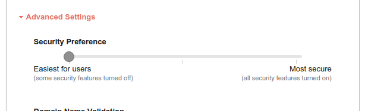
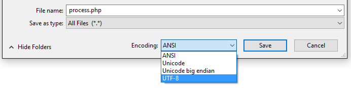

Table of contentsSearch
InstallationTop
How to install
To install the form into your web page, there are 5 things you must do:
- 1. Copy the HTML code for the form into your web page
- 2. Copy the CSS stylesheet link(s) into your web page
- 3. Copy the JavaScript links into your web page
- 4. Configure the form to send messages to your email address
- 5. Upload the
quformfolder to your web server
Each step is explained in more detail below.
1. Copy the HTML code for the form into your web page
Open the index.html file and locate the HTML code for the
form, it is located between the HTML comments <!-- To copy the form start here -->
and <!-- To copy the form end here -->. Select all of this code then copy and paste
it into the body of your web page.
2. Copy the link to the CSS stylesheet into your web page
There is one main stylesheet used by the form, the base.css located in quform/css/
The other optional stylesheet is a Theme style, these are located in quform/themes/. There are 6 options for Themes 3 dark and 3 light, for more information on this visit the Changing the form theme section.
- 1. Base:
- quform/css/base.css
- 2. Themes:
- quform/themes/light/light.css
- quform/themes/light/rounded.css
- quform/themes/dark/dark.css
- quform/themes/dark/rounded.css
- quform/themes/minimal/light.css
- quform/themes/minimal/dark.css
Here is an example of the stylesheets in the head. NB: if you change the theme stylesheet you will also need to add a new class into the quform-outer div. You can get more information on this in the Changing the form theme section.
<link rel="stylesheet" type="text/css" href="quform/css/base.css" /> <link rel="stylesheet" type="text/css" href="quform/themes/light/light.css" />
3. Copy the JavaScript links into your web page
The form requires the 3 JavaScript files shown below, to include them in your web page, copy the lines below and
paste them into your web page. The best place to put these is at the end of the page, just before the closing </body> tag.
<script type="text/javascript" src="quform/js/jquery-3.5.1.min.js"></script> <script type="text/javascript" src="quform/js/plugins.js"></script> <script type="text/javascript" src="quform/js/scripts.js"></script>
Note: if your web page already uses the jQuery library you do not need the first file (jquery-3.5.1.min.js) so remove that line, jQuery needs to be version 1.8.0 or later for the form to work.
4. Configure the form to send messages to your email address
To configure the form, open quform/process.php and search for the code below.
$config['recipients'] = '';
Inside the single quotes enter the email address that you would like to receive the submitted form data. For example:
$config['recipients'] = 'me@example.com';
Set the "From" address
While you are in quform/process.php you should also set the "From" email address,
search for the term $config['from'] = ''; and enter an email address inside the single quotes.
Any emails you get from the script will appear to be sent from this address. Some web hosts will block emails sent from an
email address that is not hosted on their servers, so it's usually a good idea to set this
to an email address that has the same domain as the site that the form is hosted on.
$config['from'] = 'company@example.com';
If you want to include your name or company name in the "From" address you can also use the code below.
$config['from'] = array('company@example.com' => 'Company');
Further configuration
You have now completed is the minimal setup that is required for the form to work, you can now upload the form to your web server as described in step 5. You can also continue to change the settings in process.php at this time or upload additional changes as you build your form. Each setting in process.php is accompanied by a comment explaining what it does and what the options are. You can also refer the customization sections below for further help.
5. Upload the quform folder to your web server via FTP
You should now upload the quform folder so that it resides in the same
place as your web page containing the form. The quform folder and your PHP/HTML file should be in the same folder on your web server.
If this setup is not possible, just change the action="" attribute of the <form> tag to point to the location of the quform/process.php file
relative to the page with your form on it.
Now visit your web page in your browser, the form should appear and the contact form should work correctly. See the troubleshooting section below if you are having problems.
Installing using existing form HTML
If you have already built a form in HTML and want to use Quform to handle the form processing, follow these instructions instead of the normal installation instructions.
Step 1
Find the <form> tag in your existing form HTML and add the class quform to it, and set the action attribute to the path to the quform/process.php file and make sure that the method attribute is post.
For file uploads to work when JavaScript is disabled, add the attribute enctype="multipart/form-data".
<form class="quform" action="quform/process.php" method="post" enctype="multipart/form-data">
Wrap all of the form fields in a <div> with class quform-elements, the success message will be displayed at the top of this. If you already have a tag wrapping all fields just add the class quform-elements to it. This tag must be inside the <form> tag.
<div class="quform-elements"> ... all form fields here ... </div>
Wrap each form field in a <div> with class quform-input, validation error messages will be displayed at the bottom of this. If you already have a tag wrapping each field just add the class quform-input to it.
<div class="quform-input"> ... one form field here ... </div> <div class="quform-input"> ... one form field here ... </div>
Step 2
Add the link to the Quform base stylesheet in the <head> section of the page.
<link rel="stylesheet" type="text/css" href="quform/css/base.css" />
Step 3
Add the links to the Quform JavaScript files just before the closing </body> tag.
<script type="text/javascript" src="quform/js/jquery-3.5.1.min.js"></script> <script type="text/javascript" src="quform/js/plugins.js"></script> <script type="text/javascript" src="quform/js/scripts.js"></script>
Note: if your web page already uses the jQuery library you do not need the first file (jquery-3.5.1.min.js) so remove that line, jQuery needs to be version 1.8.0 or later for the form to work.
Step 4
To configure the form, open quform/process.php and search for the code below.
$config['recipients'] = '';
Inside the single quotes enter the email address that you would like to receive the submitted form data. For example:
$config['recipients'] = 'me@example.com';
Set the "From" address
While you are in quform/process.php you should also set the "From" email address, search for the term $config['from'] = ''; and enter an email address inside the single quotes. Any emails you get from the script will appear to be sent from this address. Some web hosts will block emails sent from an email address that is not hosted on their servers, so it's usually a good idea to set this to an email address that has the same domain as the site that the form is hosted on.
$config['from'] = 'company@example.com';
If you want to include your name or company name in the "From" address you can also use the code below.
$config['from'] = array('company@example.com' => 'Company');
Add PHP configuration for each existing field
So that the fields can be processed you need to add an element configuration to the process.php file for each field. For most fields you can simply add this code to the element configuration section of process.php for each field.
$element = new Quform_Element('my_element_name', 'My element label');
$form->addElement($element);
- Replace
my_element_nameto exactly match thenameattribute of the field in the form HTML - Replace
My element labelwith a label for this field
You can also remove any existing element configuration from process.php that does not apply to your form. See the Customisation page for more information about element configuration.
Step 5
You should now upload the quform folder so that it resides in the same place as your web page containing the form. The quform folder and your PHP/HTML file should be in the same folder on your web server. If this setup is not possible, just change the action="" attribute of the <form> tag to point to the location of the quform/process.php file relative to the page with your form on it.
Now visit your web page in your browser, the form should appear and the contact form should work correctly. See the troubleshooting section if you are having problems.
Updating the script
Updating the script can be a time consuming process depending on how many files you have modified and what has changed in the update. Unless there is a critical security issue update, or there is a feature you want, it would save time to stay on the version you are on currently.
Step 1
Download and extract the new version of Quform from your CodeCanyon Downloads page.
Step 2
Make the same changes to the files in the new package that you did to the previous Quform version. Mainly this will be copying over the settings from process.php into the new process.php file. Copy email recipients, element configuration and anything else you changed. The form HTML on your site can probably stay the same. If you have made any CSS changes in base.css make the same changes to the new base.css file.
Step 3
On your server rename the quform folder to quform2, which means you have a backup of it for now. Then upload the quform folder from the new package in its place. Test the form again and sort any issues if needed.
Using the examples
We have included some example files so that you can quickly create forms by copying and pasting from them. The example forms each use a different process file.
Using elements from the examples
If you copy an element from one of the example forms, you will also need to copy the element configuration from the form process file. To find the correct file look at the <form> tag of the example form and check the action attribute. For example, the example-file-uploads.html form example if processed by the file quform/process-file-uploads.php
<form class="quform" action="quform/process-file-uploads.php" method="post" enctype="multipart/form-data">
Starting with an example form
If you are starting with one of the example forms, make sure you are modifying the correct process file. The documentation will ask you to modify the process.php file, but you should check the action attribute of the example form to see which file to modify instead.
Customising your formTop
Adding a form element
To add a form element, there are three steps.
- 1. Pick a unique name for the element
- 2. Add the HTML for the form element to your web page
- 3. Add the form element to the
process.phpfile to make the PHP script aware of the new form element
Each step is explained in more detail below.
1. Pick a unique name for the element
Choose a name for your new element that is not currently used by another element. The name should be all lower case and multiple words should be joined by an underscore.
For example, fax_number.
2. Add the HTML for the form element to your web page
The easiest way to add another form element is to copy the existing HTML code from another element, including
all surrounding wrappers. Each element included with the form has comments surrounding it and the file example-all-elements.html has example code
for most form elements you will ever need to use.
To copy the entire element,
you would select the all the HTML code between the comments. For example, lets say we wanted
to add a new required field called "Fax number". We would copy the HTML for the "Name" field by searching
in index.html for <!-- Begin Text input element, you will be taken to the code for the name
element, copy the code inside the HTML comments surrounding the name element. Paste the code in between the form elements that you would like your new element
to be between. You would then change all occurrences of "name" in your copied code with your
unique name "fax_number" (except in this case do not change the actual name attribute key i.e. it
should be name="fax_number" NOT fax_number="fax_number" on the
input), after all the highlighted changes have been made we have:
<!-- Begin Text input element -->
<div class="quform-element quform-element-text">
<div class="quform-spacer">
<label for="fax_number">Fax number <span class="quform-required">*</span></label>
<div class="quform-input">
<input id="fax_number" type="text" name="fax_number" />
</div>
</div>
</div>
<!-- End Text input element -->
3. Add the form element to the process.php file to make the PHP script aware of the
new form element
To make the PHP script aware of the new element, you will need to edit the quform/process.php file.
You will need to create a new Quform_Element object for your new field, if you don't know how to do that just copy the existing code
for the name element. In process.php search for the term $name and you should find
4 lines of PHP code. Copy and paste this code above or below the existing 4 lines of code and then change everything that says "name" to your unique name "fax_number", giving us:
$fax_number = new Quform_Element('fax_number', 'Fax number');
$fax_number->addFilter('trim');
$fax_number->addValidator('required');
$form->addElement($fax_number);
IMPORTANT: The parts in red above must match the name="" attribute of the form element in the HTML, they should both be identical
to your unique name you created in Step 1. This tells the PHP script what element you are referring to.
The filter you are adding to the element in the code above will trim whitespace from the start and end of the value submitted by the form user. The validator you are adding in the code above will make the field required. If you do not want those filters or validators for the element just delete the line that adds them. For more help on Filters and Validators see the Advanced form customisation section below.
The other text we changed ('Fax number') sets the label in the email and the
non-JavaScript version of the form.
Adding a Date form element
Adding a Date element is slightly different from adding any other element, there are three steps.
- 1. Pick a unique name for the element
- 2. Add the HTML for the form element in your web page
- 3. Add the form element to the process.php file to make the PHP script aware of the new form element
Each step is explained in more detail below.
1. Pick a unique name for the element
Choose a name for your new element that is not currently used by another element. The name should be all lower case and multiple words should be joined by an underscore.
If this is the first date element in your form a good name would be date.
2. Add the HTML for the form element in your web page
The easiest way to add another form element is to copy the existing HTML code for the element, including
all surrounding wrappers. There is an example of the Date element HTML in the
file example-all-elements.html. So to copy the entire element
you would select the all the HTML code between the comments:
<!-- Begin Date element -->
...
<!-- End Date element -->
Paste the HTML into your own form in the position you desire.
3. Add the form element to the process.php file to make the PHP script aware of the new form element
To make the PHP script aware of the new element, you will need to edit the file quform/process.php.
You will need to create a new Quform_Element_Date object for your new field, if you don't know how to do that just copy the existing code
for the Date element in the file quform/process-all-elements.php. If your unique name from step one is not date,
replace the red parts of the code with your unique name.
$date = new Quform_Element_Date('date', 'Date');
$date->addValidators(array('required', 'date'));
$form->addElement($date);
IMPORTANT: The second occurrence date in red above must match the first part of the name="" attribute of the select elements in the HTML (before the [month], [day], [year] parts). This tells the PHP script
what element you are referring to.
Adding a Time form element
Adding a Time element is slightly different from adding any other element, there are three steps.
- 1. Pick a unique name for the element
- 2. Add the HTML for the form element in your web page
- 3. Add the form element to the process.php file to make the PHP script aware of the new form element
Each step is explained in more detail below.
1. Pick a unique name for the element
Choose a name for your new element that is not currently used by another element. The name should be all lower case and multiple words should be joined by an underscore.
If this is the first date element in your form a good name would be time.
2. Add the HTML for the form element in your web page
The easiest way to add another form element is to copy the existing HTML code for the element, including
all surrounding wrappers. There is an example of the Time element HTML in the
file example-all-elements.html. So to copy the entire element
you would select the all the HTML code between the comments:
<!-- Begin Time element -->
...
<!-- End Time element -->
Paste the HTML into your own form in the position you desire.
3. Add the form element to the process.php file to make the PHP script aware of the new form element
To make the PHP script aware of the new element, you will need to edit the file quform/process.php.
You will need to create a new Quform_Element_Time object for your new field, if you don't know how to do that just copy the existing code
for the Time element in the file quform/process-all-elements.php. If your unique name from step one is not time,
replace the red parts of the code with your unique name.
$time = new Quform_Element_Time('time', 'Time');
$time->addValidators(array('required', 'time'));
$form->addElement($time);
IMPORTANT: The second occurrence of time in red above must match the first part of the name="" attribute of the select elements in the HTML (before the [hour], [minute] parts). This tells the PHP script
what element you are referring to.
Adding a multiple value form element
There are a couple of elements that can have multiple values, for example, a group of checkboxes or a multiple select element.
When adding these elements, you need to add a pair of square brackets to the name attribute of the element [].
To add a multiple form element, there are three steps.
- 1. Pick a unique name for the element
- 2. Add the HTML for the form element in your web page
- 3. Add the form element to the process.php file to make the PHP script aware of the new form element
Each step is explained in more detail below.
1. Pick a unique name for the element
Choose a name for your new element that is not currently used by another element. The name should be all lower case and multiple words should be joined by an underscore.
Because this is a multiple value element, you should also add a pair of square brackets to the end. For example, pizza_toppings[].
2. Add the HTML for the form element in your web page
The easiest way to add another form element is to copy the existing HTML code for the element, including
all surrounding wrappers. There is an example of most HTML form elements and the code you should use in the
file example-all-elements.html. Each element included with the form has comments surrounding it. So to copy the entire element
you would select the all the HTML code between the comments. For example, lets say we wanted
to add a multi checkbox field. We would copy the HTML for the "Multi checkbox" element by searching inside
example-all-elements.html for the term Multi Checkbox
then copying the HTML for the element and pasting the code in between the form elements that you would like your new element
to be between. You would then change all occurrences of "multi_checkbox[]" in your copied code with the name you want to give your new element, below I have given
it the name "pizza_toppings[]".
<!-- Multi Checkbox element -->
<div class="quform-element quform-element-checkbox">
<div class="quform-spacer">
<label>Multi checkbox <span class="quform-required">*</span></label>\
<div class="quform-input">
<div class="quform-options">
<div class="quform-option">
<label><input name="pizza_toppings[]" value="Ham" type="checkbox" /> Ham</label>
</div>
<div class="quform-option">
<label><input name="pizza_toppings[]" value="Pepperoni" type="checkbox" /> Pepperoni</label>
</div>
<div class="quform-option">
<label><input name="pizza_toppings[]" value="Pineapple" type="checkbox" /> Pineapple</label>
</div>
<div class="quform-option">
<label><input name="pizza_toppings[]" value="Mushrooms" type="checkbox" /> Mushrooms</label>
</div>
<div class="quform-option">
<label><input name="pizza_toppings[]" value="Olives" type="checkbox" /> Olives</label>
</div>
</div>
</div>
</div>
</div>
<!-- End Multi Checkbox element -->
3. Add the form element to the process.php file to make the PHP script aware of the new form element
To make the PHP script aware of the new element, you will need to edit the file quform/process.php.
You will need to create a new Quform_Element object for your new field, if you don't know how to do that just copy the existing code
for the one of the existing elements then change the name to suit your new element or use the code below. The difference with multiple elements
is the you need to add [] to the end of the name in process.php also. Continuing the above example would give us:
$pizzaToppings = new Quform_Element('pizza_toppings[]');
$form->addElement($pizzaToppings);
IMPORTANT: The part in red above must match the name="" attribute of the form element in the HTML. This tells the PHP script
what element you are referring to.
Removing a form element
Step 1
Remove the HTML for the form element in your web page. Each form element and its associated wrappers are commented individually in index.html. Find the form element you want to remove by looking at the text inside in the <label> tag. Once you've found it, delete the HTML code between the comments surrounding the element. For example, to remove the Type the word (CAPTCHA) element, search index.html for the term Type the word and delete the lines between the start and end comments surrounding the element HTML as shown below.
<!-- Begin Captcha element -->
... Delete everything between these comments (and the comments too) ...
<!-- End Captcha element -->
Step 2
Remove the form element from the process.php file to make the PHP script aware that the form element is no longer there. In quform/process.php, locate the code that creates the form element you want to remove. If you wanted to delete the Type the word (CAPTCHA) element, search for the term $captcha, the code you are looking for would be:
$captcha = new Quform_Element('type_the_word', 'Type the word');
$captcha->addFilter('trim');
$captcha->addValidator('required');
$captcha->addValidator('identical', array('token' => 'catch'));
$captcha->setIsHidden(true);
$form->addElement($captcha);
Remove (or just comment out) all of these lines.
Making a field required
A required field simply has a validator called required added to it. You can use the
method addValidator() on your element to add the required validator.
In process.php enter code on a new line to
add the validator, for example if you wanted to make the subject field required, search for the term $subject
and add the highlighted line of code as shown below.
$subject = new Quform_Element('subject');
$subject->addFilter('trim');
$subject->addValidator('required');
$form->addElement($subject);
It may also be a good idea to add an asterisk to the element label on your web page to let users know that the element is now required. Here is the preset HTML we have for this on a form element label:
<label>Grouped file upload <span class="quform-required">*</span></label>
Adding an element description
Simply add the highlighted HTML inside the input wrapper under the input, select textarea etc.
<div class="quform-input">
<input type="file" id="upload" name="upload" />
<p class="quform-description">All files allowed. Maximum size 10MB.</p>
</div>
Changing the required error message - "This field is required"
To change the required message, pass in an additional parameter to the addValidator line, containing
an array of options with your message, the syntax and array nesting is important. Copying the code here is a good idea,
just be sure to change $element to match your element's unique name.
$element->addValidator('required', array(
'messages' => array('required' => 'This is a required field')
));
NOTE: if you are having any problems with this, you can change the message directly in the file lib/Quform/Validator/Required.php near the top of the file. The same goes for the other validators.
Making a field not required
To make a field not required you need to remove the 'required' validator. Open process.php
and find the PHP code for the element you want to change. There should be code that looks like the following:
$element->addValidator('required'); // Single validator
or
$element->addValidators(array('required', 'email')); // Multiple validators
If the element has the single validator line of code, simply delete or comment out the line adding the required validator. If the element has the multiple validators line, remove the 'required' string and the comma after it. The multiple validators line would now look like this:
$element->addValidators(array('email')); // Multiple validators (required removed)
It might also be a good idea to remove the asterisk from the element label on your web page to let users know that the field is no longer required.
Input and button sizes
There are a list of CSS preset sizes for form input and button sizes. Use the classes listed below to modify your element sizes quickly and consistently throughout your form.
Input, select and textarea sizes
You can add any of the styles below to the element outer wrapper (quform-element).
Add the class like this example:
<!-- Begin Text input element --> <div class="quform-element quform-small quform-element-text">
- quform-small
- quform-med
- quform-large
- quform-huge
- quform-full-width
- quform-fat
Specific size for a single field
To make a single field have a specific size you can use an inline CSS style on the input tag to set the width. Example below.
<input id="email" type="text" name="email" style="width: 250px;" />
Button sizes
You can add any of the styles below to the button outer wrapper (quform-submit).
Add the class like this example:
<!-- Begin Submit button --> <div class="quform-submit quform-button-small">
- quform-button-small
- quform-button-med
- quform-button-large
- quform-button-full-width
- quform-button-fat
If you would like to change the sizes of these styles you can find them in the base.css, search the document for /*Preset element sizes for the start of the code.
Changing the form theme
How to style
Quform comes with three themes; Dark and Dark rounded, Light and Light rounded, and Minimal Light and Dark. You can choose to style the form using a theme or you can start with the base styles and create your own styles in another stylesheet.
Probably the simplest method of making your form design is to copy an existing Quform theme, change the name and edit the styles and images within it. More details on this are given below.
Adding / changing a theme
Follow these steps to change the Quform theme to one of the four theme options available. I'm using Quform Light Rounded in this example:
1: Add the stylesheet for the theme in the header. The theme CSS should be below the base.css link. Like this:
<link rel="stylesheet" type="text/css" href="quform/css/base.css" />
<link rel="stylesheet" type="text/css" href="quform/themes/light/rounded.css" />
Here are the stylesheet links for the other available themes:
- Light - quform/themes/light/light.css
- Light Rounded - quform/themes/light/rounded.css
- Dark - quform/themes/dark/dark.css
- Dark Rounded - quform/themes/dark/rounded.css
- Minimal Light - quform/themes/minimal/light.css
- Minimal Dark - quform/themes/minimal/dark.css
2: Add a class to quform-outer wrapper specifying the Theme class name.
Locate the div with class name quform-outer – this is at the very start of the form HTML.
Change the existing quform-theme class to the class of the new theme e.g. quform-theme-light-rounded to use the Light Rounded theme. Like this:
<div class="quform-outer quform-theme-light-rounded">
Here are the class names for the other available themes:
- Light - quform-theme-light-light
- Light Rounded - quform-theme-light-rounded
- Dark - quform-theme-dark-dark
- Dark Rounded - quform-theme-dark-rounded
- Minimal Light - quform-theme-minimal-light
- Minimal Dark - quform-theme-minimal-dark
Creating a new theme:
You can either create a new theme by copying one of the existing theme folders and editing the CSS or use the Blank theme in resources/themes/blank
In both cases you will need to do the following:
- 1: Change the name of the directory / folder name and add it to
quform/themes/folder. - 2: Change the name of the CSS file(s) within the theme.
- 3: Change the details in the comment at the top of the document with your new themes details.
- 4: Change the main selector for all of the classes in the form. You can use find and replace (usually ctr+F) to do this. If you copied the light theme for example find
.quform-theme-light-lightand replace all with your new name. If you are starting with the Base theme find and replace all.quform-theme-blank-new.
You could replace this class with any name you like. However, we would recommend using the structure below especially if you would like to sell or share your new theme. Whatever this new class name is must be added to the quform-outer div as shown above in the Adding / changing a theme section.
.quform-theme-[Theme folder name]-[Theme CSS file name]
Non-JavaScript layout
We have minimally styled a page that non JavaScript users will see errors and the success message on using neutral colors.
If you want to change the style of this page edit the file quform/nojs.php. To see what the page
looks like, disable JavaScript in your browser and submit the form.
Label options
There are two label positioning options available with the current CSS, left labels and above labels (default). You can easily swap between them simply by adding a new class on the outer wrapper of any Element, a Group wrapper or the Form outer wrapper. The current CSS supports 3 levels of label position inheritance into nested Groups, if you need more please contact support.
Changing the label position
Here is an example of all three positions to add the label position class. The two class options are listed below.
Labels set on the form outer wrapper. This will effect all elements in the form.
<!-- To copy the form HTML, start here --> <div class="quform-outer quform-theme-light-rounded quform-labels-left">
Labels set on the Group outer wrapper. This will effect all elements in the Group.
<!-- Begin 2 column Group --> <div class="quform-group-wrap quform-labels-above quform-group-style-plain quform-group-alignment-left">
Labels set on the Element outer wrapper. This will effect only one element.
<!-- Begin Text input element --> <div class="quform-element quform-labels-left quform-element-text">
Class names:
- Left labels: quform-labels-left
- Above labels: quform-labels-above (default)
Changing layout using Groups
Most complex layouts can be achieved using the Groups. For more advanced layouts you will need to modify your own CSS. Labels also have two options of being above or to the left of the input element.
Adding a group and configuring:
Here is an example of a Group HTML layout structure. This example has elements floating left in 2 columns and two rows, it also has a bordered style. The changeable classes have been highlighted.
<!-- Begin 2 column Group -->
<div class="quform-group-wrap quform-group-style-bordered quform-group-alignment-left">
<div class="quform-group-elements">
<div class="quform-group-row quform-group-row-2cols">
<!-- Begin Text input element -->
<div class="quform-element quform-element-text">
...
</div>
<!-- End Text input element -->
<!-- Begin Text input element -->
<div class="quform-element quform-element-text">
...
</div>
<!-- End Text input element -->
</div>
<div class="quform-group-row quform-group-row-2cols">
<!-- Begin Text input element -->
<div class="quform-element quform-element-text">
...
</div>
<!-- End Text input element -->
<!-- Begin Text input element -->
<div class="quform-element quform-element-text">
...
</div>
<!-- End Text input element -->
</div>
</div>
</div>
<!-- End 2 column Group -->
Setting the group column alignment
You can choose to either have the columns in your Group all using proportional space or you can choose to have the side by side using their true width.
Add the class quform-group-alignment-proportional or quform-group-alignment-left to the Group wrapper div which has the class name quform-group-wrap. Here is an example:
Left aligned group elements:
<!-- Begin 2 column Group --> <div class="quform-group-wrap quform-group-style-bordered quform-group-alignment-left">
Proportionally aligned group elements:
<!-- Begin 2 column Group --> <div class="quform-group-wrap quform-group-style-bordered quform-group-alignment-proportional">
Plain groups and bordered group style
You can choose to have a pre designed bordered box around your group or you can have the group plain – with no styles.
Add the class quform-group-style-bordered or quform-group-style-plain to the Group wrapper div which has the class name quform-group-wrap. Here is an example:
Bordered group class:
<!-- Begin 2 column Group --> <div class="quform-group-wrap quform-group-style-bordered quform-group-alignment-proportional">
Plain group class:
<!-- Begin 2 column Group --> <div class="quform-group-wrap quform-group-style-plain quform-group-alignment-proportional">
Changing label position within a Group
If you like you can choose to change the label style for all elements within a certain group. You can also change this for any nested Groups.
Add the class quform-labels-above or quform-labels-left to the Group wrapper div which has the class name quform-group-wrap. Here is an example:
Labels above in Group
<!-- Begin 2 column Group --> <div class="quform-group-wrap quform-labels-above quform-group-style-bordered quform-group-alignment-proportional">
Lables left in Group:
<!-- Begin 2 column Group --> <div class="quform-group-wrap quform-labels-left quform-group-style-bordered quform-group-alignment-proportional">
NB: You can override the labels within a group for a particular element by adding one of the same classes to the element wrapper (quform-element). Like this:
<div class="quform-element quform-element-text quform-labels-left">
Add a Group Title, Description or both.
Add the following HTML directly under the div with class name quform-group-elements.
<div class="quform-group-title-description-wrap">
<div class="quform-group-title">Title</div>
<p class="quform-group-description">Description</p>
</div>
Simply remove the line for Title or Description if it is not required for your Group.
Creating columns
You can create up to 5 columns with the existing CSS. To create columns you first need to decide how many you would like. For this example I will make a 3 column layout with 2 rows.
You need to locate (or create) a quform-group-row wrapper which you will apply a column number class on it, for example; quform-group-row-2cols (full list shown below).
<!-- Begin 3 column Group -->
<div class="quform-group-wrap quform-group-style-bordered quform-group-alignment-left">
<div class="quform-group-elements">
<div class="quform-group-row quform-group-row-3cols">
<!--Add three elements here-->
</div>
<div class="quform-group-row quform-group-row-3cols">
<!--Add three elements here-->
</div>
</div>
</div>
<!-- End 3 column Group -->
NB: Add the same number of form elements as columns to ensure the code works correctly.
List of column classes:
- quform-group-row-1cols
- quform-group-row-2cols
- quform-group-row-3cols
- quform-group-row-4cols
- quform-group-row-5cols
Nested Groups
You can add Groups inside Groups simply by adding the new group HTML inside the quform-group-row, just like you would an element.
Here is an example of a two column Group with another two column Group nested in the 2nd column.
<!-- Begin 2 column Group -->
<div class="quform-group-wrap quform-group-style-bordered quform-group-alignment-proportional">
<div class="quform-group-elements">
<div class="quform-group-row quform-group-row-2cols">
<!-- Begin Text input element -->
<div class="quform-element quform-element-text">
...
</div>
<!-- End Text input element -->
<!-- Nested Group -->
<div class="quform-group-wrap quform-group-style-bordered quform-group-alignment-proportional">
<div class="quform-group-elements">
<div class="quform-group-row quform-group-row-2cols">
<!-- Begin Text input element -->
<div class="quform-element quform-element-text">
...
</div>
<!-- End Text input element -->
<!-- Begin Text input element -->
<div class="quform-element quform-element-text">
...
</div>
<!-- End Text input element -->
</div>
</div>
</div>
<!-- Nested Group -->
</div>
</div>
</div>
<!-- End 2 column Group -->
Changing the tooltips
The form tooltips are created using the Tippy.js. See the sections below on changing the tooltips.
Changing the text of a tooltip
The tooltips become active when the form element has the class quform-tooltip and it uses the
content of the data-tippy-content="" attribute of the form element. If you want to change the text of a
tooltip, locate the form element in the HTML and change the data-tippy-content="" attribute to the text you want to
display.
Adding or removing a tooltip
The tooltips become active when the form element has the class quform-tooltip and it uses the
content of the data-tippy-content="" attribute of the form element. If you want to show
a tooltip on an element that doesn't have one already, add the class quform-tooltip to
the form element and add a data-tippy-content="" attribute containing the text you
want to display in the tooltip.
To remove a tooltip from an element that already has one, remove the class quform-tooltip from the form element and remove the data-tippy-content="" attribute.
Changing the look of the tooltips
You can change the CSS styles of the tooltip, this is found at the in the base stylesheet (base.css), search for .tippy-box[data-theme~="quform"] and add any desired CSS styles there.
Using a Help icon for the tooltip
There is an option to use a Help icon as the tooltip trigger. All you need to do is add the following HTML inside the label.
The icon will change depending on the theme you are using and can be found in the theme image folder, quform/theme/[theme]/images/. If no theme is used it will be set to the default image found in the quform/images/.
<label for="first_name">First name <span class="quform-required">*</span>
<span class="quform-tooltip-icon quform-tooltip" data-tippy-content="Tooltip text here"></span></label>
Changing the success message
The success message is the message that is displayed to the user when the form has been successfully
submitted. To change it open process.php and search for the term $config['successMessage'],
it's right at the top of the file.
Change the success message to suit, you can add or remove as much HTML or text as you want there.
Since the string is enclosed in single quotes ', if
you want to include a single quote in your text or HTML you will need to escape it, by adding a
backslash before it e.g. \'
Using form submitted data in the success message
You can also put submitted form data into the success message, such as the persons name. To do that just include the unique element name surrounded by percentage signs. For example to have a message containing the person's name:
$config['successMessage'] = 'Thank you for your message, %name%.';
Changing / adding notification email recipients
Email recipients are the list of email addresses who will be sent the data of the form when
it is submitted by the user. Some people may want this to go to multiple people so we have added
the facility to do that. To add or change the recipients, open process.php and search
for the code below.
$config['recipients'] = '';
You will find the array of current recipients. If you just want the email to go to one email address, then just enter your email address inside the single quotes.
Single recipient
$config['recipients'] = 'me@example.com';
Multiple recipients
$config['recipients'] = array(
'me@example.com',
'you@example.com',
'another@example.com'
);
Setting the "From" address
Open process.php and search for the term $config['from'] = ''; and enter an email address inside the quotes.
$config['from'] = 'company@example.com';
Setting a name with your "From" address
You can also set a name to be sent with the address using the code below.
$config['from'] = array('company@example.com' => 'Company');
Setting the "From" address to the submitted email address
You can also set the from address to a submitted email address. To do that set it to be the unique element name surrounded by percent signs, e.g.
$config['from'] = '%email%';
Setting the "From" address to the submitted email address and name
You can also set the from address to a submitted email address and name combination. To do that, set it to be an array with the email unique element name surrounded by percent signs as the key and the name unique element name surrounded by percent signs as the array value, e.g.
$config['from'] = array('%email%' => '%name%');
Different notification email recipients based on chosen subject
You might want to change the recipients of the email based on the subject chosen by the form user. To do this you will need to change the recipients array
depending on which subject was chosen. The code below shows an example of how you would do this and this code will replace the existing
code that sets the notification recipients in process.php. The string after case should match the value attribute of the option in the HTML of the form.
Different recipients per subject
switch($_POST['subject']) {
case 'General enquiry':
$config['recipients'] = array(
'email1@example.com',
'email2@example.com',
'email3@example.com'
);
break;
case 'Sales enquiry':
$config['recipients'] = array(
'email4@example.com',
'email5@example.com',
'email6@example.com'
);
break;
case 'Support enquiry':
$config['recipients'] = array(
'email7@example.com',
'email8@example.com',
'email9@example.com'
);
break;
default:
// These will be the recipients if the subject does not match any above
$config['recipients'] = array(
'email1@example.com',
'email4@example.com',
'email7@example.com'
);
break;
}
Changing the notification email subject
You can change the email subject to something that is more relevant to your form. To do this, open quform/process.php
and search for the term $config['subject']. Change the text inside the quotes to the subject you want. You can use placeholder values inside % signs to have the
value replaced by the form value of that name, such as in the default subject %name% will be replaced by the submitted value of the "name" field.
Changing the label of an element in the email
The element's label is shown in two places:
- The error page for non-JavaScript users (nojs.php)
- The notification email
To change the label of the element, locate the line of code that creates the element in
process.php. The second string of text you specify when creating the element
is the label.
If you wanted to change the type_the_word element to say Security code in the non-JavaScript page for example, then do this:
$captcha = new Quform_Element('type_the_word', 'Security code');
Changing the animated loading gif
The animated loading gif is located at quform/images/default-loading.gif. Replace that image with your own. If the image doesn't change for you do a force reload in the browser by pressing Ctrl+F5.
You might also want to adjust the CSS for the new image, you can do so in the quform/css/base.css file, at these selectors:
.quform-loading-wrap {
.quform-loading-wrap .quform-loading {
Changing the CAPTCHA image
It is possible that the captcha (Type the word) image that is included with the form does not match your design and you can change it quite simply.
We have created 8 CAPTCHA image styles that you can use by simply changing the image in the HTML. Here is a list of the image names:
- ar-carter-dark.png
- ar-carter-light.png
- courier-new-dark.png
- courier-new-light.png
- crime-scene-dark.png
- crime-scene-light.png
- dripping-marker-dark.png
- dripping-marker-light.png
In the Resources folder you will see a PSD (Photoshop) file so you can modify any one of our captcha images to suit your site.
- 1. Replace the file
quform/images/courier-new-light.pngwith your new image - 2. You can choose any word you want for the image, if you change it from the default, you will need to
change the
process.phpfile to change the token of the captcha validator to match the word contained in your new image. See below for more information.
In process.php locate the configuration for the CAPTCHA field by searching
for the term $captcha, you will see the code below.
$captcha->addValidator('identical', array('token' => 'catch'));
Change the text catch to match the word or letters that are in your new CAPTCHA image.
NOTE: The CAPTCHA system is very simple and will prevent random form submissions by bots roaming around the internet (which happens a lot). It will not prevent targeted attacks however, but the chances of that happening are small and most other CAPTCHAs are not safe against targeted attacks either. We believe that an easy, simple CAPTCHA is a good trade off between the spam, usability and browser compatibility of the form. Since at the end of the day you don't want to miss messages for new business by users being put off or unable to pass a complex CAPTCHA challenge. If you do need a more complex CAPTCHA field, see the sections below "Using reCAPTCHA" and "Using a custom CAPTCHA".
Redirecting to another page after the form is submitted
Open quform/process.php and search for the term $config['redirect'].
You can set this variable to the URL you would like to redirect to:
$config['redirect'] = 'http://www.example.com/your_thanks_page.html';
Quform in a popup (lightbox)
You can make the form appear in a popup lightbox by following these instructions. We will use the Colorbox jQuery plugin as our lightbox script. There are 6 steps.
- 1. Download and extract the Colorbox files
- 2. Add the link to the Colorbox CSS file
- 3. Add the link to the Colorbox JS file
- 4. Hide the Quform in the HTML
- 5. Set up your trigger element
- 6. Add the JavaScript to show the Quform when the trigger is clicked
Each step is explained in more detail below.
1. Download and extract the Colorbox files
For the rest of this example, I am assuming that you have copied the root colorbox folder from the zip file to inside the quform/js folder.
2. Add the link to the Colorbox CSS file
Add a link to the CSS file in the head of your page e.g.
<link rel="stylesheet" type="text/css" href="quform/js/colorbox/example1/colorbox.css" />
Note: this example uses the "example1" Colorbox theme, if you choose another theme just replace example1 in the path with the theme that you have chosen.
3. Add the link to the Colorbox JS file
Then add a link to the jquery.colorbox-min.js file, put this on the line before the link to
scripts.js file (but after the link to the jQuery library) in the head of the page e.g.
<script type="text/javascript" src="quform/js/colorbox/jquery.colorbox-min.js"></script>
4. Hide the Quform in the HTML
With your Quform HTML already in your page, wrap the entire Quform HTML in a div with the style display: none; e.g.
<div style="display: none;">
// Your Quform HTML
</div>
5. Set up your trigger element
Add your link that will trigger the form to be displayed, put this anywhere on your page outside the div you added above, e.g.
<a href="#" id="show-quform">Contact us</a>
6. Add the JavaScript to show the Quform when the trigger is clicked
Add this code to js/scripts.js inside the document.ready() function (on line 4 for example):
$("#show-quform").colorbox({
inline: true,
href: '.quform-outer'
});
Additional options
You can pass in any other Colorbox options in the code in step 6 above, you may want to set a fixed height and width of the popup so that when the form errors show the scroll bars do not appear:
$("#show-quform").colorbox({
inline: true,
href: '.quform-outer',
height: 850,
width: 400
});
For more options see the Colorbox documentation.
Confirm email field
To add a confirmation email field, create a new form element in the HTML by copying the HTML in the box below and paste it into your form.
<!-- Begin Text input element - Email confirm -->
<div class="quform-element quform-element-text">
<div class="quform-spacer">
<label for="email_confirm">Confirm Email <span class="quform-required">*</span></label>
<div class="quform-input">
<input id="email_confirm" type="text" name="email_confirm" />
</div>
</div>
</div>
<!-- End Text input element - Email confirm -->
Add the following code to your process.php file, at the element configuration section.
$emailConfirm = new Quform_Element('email_confirm', 'Confirm email address');
$emailConfirm->addValidator('required');
$emailConfirm->addValidator('emailConfirm', array(
'messages' => array('not_match' => 'The email addresses do not match')
));
$emailConfirm->setIsHidden(true);
$form->addElement($emailConfirm);
If you'd like, you can change the error message by changing the text 'The email addresses do not match'.
Displaying a global form error
If you want to display an error message above the form when there are errors, open the process.php file
and search for the term // Form data failed validation. Make a new line immediately after this line
and add the following code.
$form->setError('There is an error with the submitted form. Please correct any errors below.');
Customize the message to suit, you can enter HTML so you are able to style your message to suit using CSS.
Advanced form customisationTop
Multiple forms
You may want to have more than one form on the same site but with different fields. Such as
a register form and a contact form. To do that, set up the first form as instructed in the
installation guide at the start of this document. To make the second form, copy the HTML for
the Quform again into the body of the page that you want your second form on and customise your new
form as described in the Customising your form section above. Then make a copy of the
quform/process.php file and call it something else, for example quform/process-register.php.
That file you should customise with the fields for your register form as described in the Customising your form section above. You should then
change the action attribute of your register form so that it now points to your
new file e.g. <form class="quform" action="quform/process-register.php" ....
Multiple forms on the same page
To have more than one Quform on the same page, just copy the HTML for the Quform again and paste it into another area of your page. You will then need
to create a new config file and change the form action attribute as described in the section Multiple forms above. There is only
one issue and that is that the form elements in the Quform have an id="" attribute, so when you have more than one element with the same id on
a page, it is no longer valid HTML, however the form will still work. If you want your page to pass W3C validation then you should change or remove the id
attributes for the elements in the second form or change the name of the elements with the same id to something else.
Email settings
The emails sent out by the system are sent by the PHPMailer script, which allows you to do pretty much anything you need to do with sending emails in PHP.
The PHP code for the configuration and sending of emails is in process.php and you can find the start of it by searching for the term $mailer. If you need to make a change to these settings you can do it there, most of the code is commented to help you make changes. You should also check out this PHPMailer tutorial to help you customise the settings.
The email is sent using PHP's mail() function by default, if your host does not
support this, you can change it to use a SMTP server instead. See the section further down
called Sending emails via an SMTP server for how to do this.
Customising the email
The email body is formatted in HTML, you can customise the email body to suit your needs. Edit the file quform/emails/notification.php,
to customise it. We recommend using tables and inline CSS for maximum compatibility. Check out this page
for help.
Accessing submitted form data from inside the emails
You have access to the form object in the email $form and therefore you can access submitted form data by using the code below. The
string you pass in to getValue() should be the name of the element that you specified in the process.php file and the name attribute in the form HTML. The code
below will display the submitted email address. You can use this code in both notification
email and the autoreply email.
<?php echo $form->getValue('email'); ?>
Display submitted form data formatted in HTML
The above code will return the raw value of the form element, which can sometimes be an array (for multi-checkbox elements for example). If you
use the method getValueHtml() instead, it will guarantee that the value will be displayed properly in the HTML email.
This method takes two arguments, the first argument is the unique element name, the second argument (optional) is the string separator that will be used to join array types, this defaults to '<br />'.
Use the code below to safely display a submitted value in the HTML email file.
<?php echo $form->getValueHtml('unique_element_name'); ?>
Note: just replace unique_element_name with the name of the element you specified in process.php to get any submitted form value. The returned
data is filtered according to any filters you added in process.php.
Sending the form user an autoreply email
You may want to send the form user an email to let them know that their enquiry was sent successfully. To do this you will need
to open the file quform/process.php and search for the term $config['autoreply'].
Set this variable to true.
If you look on the lines below this, you'll see the code that sets the subject
of the autoreply as well as the names of the files that contain the content of the email.
The subject can contain placeholder variables, which is your form element unique name surrounded by % signs. The submitted value of the form element with that name will be used in its place.
With the default settings the autoreply will contain the content found in the file quform/emails/autoreply.php. You
can simply edit this file to change the content of the autoreply email. If you need to access
a submitted form value from inside the email, see the section above called "Accessing submitted form data from inside the emails".
Different autoreply emails per form
If you want another form to have another autoreply, you should make a copy of autoreply.php
and name it something different then customise the content. Then in the process.php file for your new form, use the new filename instead for the
variable $config['autoreplyBody']. For example if you have named the autoreply file for your second form autoreply-register.php
$config['autoreplyBody'] = '/emails/autoreply-register.php';
Customising the autoreply email
To customise the autoreply email you will need to edit the file quform/emails/autoreply.php.
You can use HTML tags in this file such as <br /> for a new line.
How to add the user's IP address to the email
If you search in process.php for $config['extra'], you will find an example of the code that adds the user's IP address to the notification email.
$config['extra']['IP address'] = Quform::getIPAddress();
Copy this line and paste it into the empty line above the /** END FORM SETTINGS **/ comment.
Adding extra data to the notification email
If you search in process.php for $config['extra'], you will find some examples of code you can use to add extra data to the notification email.
You can add any other data you wish by adding more entries to this $config['extra'] array. The label will be the array key and the displayed value will be
the array value. For example, to show the user's IP address you can use this code:
$config['extra']['IP address'] = Quform::getIPAddress();
To show the time and date the form was submitted, add this code:
$config['extra']['Date'] = date('g:ia jS F Y');
To show the page that the form was submitted from, you can use this code:
$config['extra']['Form URL'] = Quform::getReferer();
Sending emails via an SMTP server
Configuring SMTP
To use an SMTP server to send the emails you will need to enter your SMTP server connection information in process.php, search for the term $config['smtp']. You will see an array, fill out the corresponding empty quotes on the right hand side of the array with your connection details. For example, to send mail via Gmail it may look something like this.
$config['smtp'] = array(
'host' => 'smtp.gmail.com',
'port' => 465,
'username' => 'your-username@gmail.com',
'password' => 'your-password',
'encryption' => 'ssl'
);
Reliable SMTP servers
There are some premium and free SMTP services available which are probably more reliable than your own mail server and have a higher delivery success.
SparkPost
Free (up to 100,000 emails per month)
SparkPost have a free SMTP service that allow you to send 100,000 emails per month for free (10,000 per day). The service also has a Dashboard where you can track each sent email. Visit https://www.sparkpost.com to sign up.
Mailjet
Free (up to 6,000 emails per month)
Mailjet have a free SMTP service that allow you to send 6,000 emails per month for free (200 per day). The service also has a Dashboard where you can track each sent email. Visit https://www.mailjet.com to sign up and see this page for how to get the SMTP settings.
Gmail
Free
You can use the free Gmail SMTP service to send emails, example settings are above.
Troubleshooting the SMTP connection
If you have configured the SMTP connection and you are still not receiving emails, or you are now getting an error when submitting the form, open the file quform/smtp-check.php (or download it from here if the file is not there) and follow the instructions at the top of the file, this file will give a detailed debugging output to help you identify the cause of the problem.
Using SMTP on a local server (WAMP, XAMPP etc.)
If you are developing your site locally with a web server package such as XAMPP, you will need to enable OpenSSL in PHP to connect to SMTP servers which use TLS or SSL. See this page to find out how.
Sending a plain text email
By default the email that is sent is in HTML format. To change this to send a plain text email, edit process.php and search for the term
// Set the email body and you will find these lines:
// Set the email body ob_start(); include QUFORM_ROOT . $config['emailBody']; $mailer->msgHTML(ob_get_clean()); $mailer->AltBody = 'To view this email please use HTML compatible email software.';
Change this code to the the following code:
// Set the email body ob_start(); include QUFORM_ROOT . '/emails/notification-plain.php'; $mailer->Body = ob_get_clean();
The email will now be sent in plain text using the content in the file /emails/notification-plain.php. You can edit that file if you want to make any modifications.
Saving form data to a MySQL database
Quform includes code to save form data to a MySQL database. To use this feature, open process.php and search for the term
$config['database'] and change it to true. Then search for the term MySQL and you should
end up above the block of code that does the saving to the database, you'll need to change a few settings here to get it working.
Step 1 - Set connection details
Change the line that connects to MySQL with your correct host, username, password and database.
$db = new mysqli('localhost', 'username', 'password', 'database');
Step 2 - Set the database table
On the line below that you should change the table name to match your table name.
$table = 'table';
Step 3 - Configure the data to save
Finally, configure the $data array to set which fields you want to save into what column. The left hand side of the array is the column name and the right hand side is the value to save. You can add new fields or remove fields to suit your needs, just duplicate a line inside the array and change the values to save to a new column.
$data = array(
'name' => $form->getValue('name'),
'email' => $form->getValue('email'),
'message' => $form->getValue('message'),
);
The data in this array is escaped using $db->real_escape_string() before insertion
to prevent SQL Injection attacks.
Accessing form data
Some types of fields such as Date and Multiple Checkbox return an array and will need additional processing before they can be inserted into the database, see the section below named Getting form values & data types and the Tips section below for more information.
Tips
Insert Date element value to DATETIME column
Before the $data array, add this line, if the element unique name is not 'date', change the highlighted part:
$date = $form->getValue('date');
Add the hightlighted line below to the $data array, if the column name is not 'date' change that part.
$data = array(
'name' => $form->getValue('name'),
'email' => $form->getValue('email'),
'message' => $form->getValue('message'),
'date' => $date['year'] . '-' . $date['month'] . '-' . $date['day'],
);
Insert Multiple Checkbox element value
Add the hightlighted line below to the $data array, if the column name and element unique name are not 'multi_checkbox' change those parts. The values will be converted to a comma separated string.
$data = array(
'name' => $form->getValue('name'),
'email' => $form->getValue('email'),
'message' => $form->getValue('message'),
'multi_checkbox' => $form->getValuePlain('multi_checkbox'),
);
Insert a File Upload URL
Before the $data array, add this line, if the element unique name is not 'upload', change the highlighted part:
$upload = $form->getValue('upload');
$uploadUrl = isset($upload[0]['url']) ? $upload[0]['url'] : '';
Add the hightlighted line below to the $data array, if the column name is not 'upload_url' change that part.
$data = array(
'name' => $form->getValue('name'),
'email' => $form->getValue('email'),
'message' => $form->getValue('message'),
'upload_url' => $uploadUrl,
);
Using a MySQL function as one of the column values
Change the query line to add your column name and function after the $columns and $values variables respectively e.g.
$query = "INSERT INTO `$table` ($columns, created_at) VALUES ('$values', NOW())";
Getting form values & data types
This section shows you how to access the form values in the PHP code and can be used in the email content files, database query, Custom code sections #1 & #2 and anywhere else inside the process() function of process.php.
Get a single form value
Use the code below to get a single form value, replace unique_element_name with the unique name of the form element.
$value = $form->getValue('unique_element_name');
$value now contains the submitted form value for element unique_element_name
Note: some types of element will return an array and not a string that can be displayed or used without further processing. See the Data types section below for the return types for different elements.
Get a single form value (formatted as Plain text)
Using this code guarantees that the returned value will be a string. Use the code below to get a single form value, replace unique_element_name with the unique name of the form element.
$value = $form->getValuePlain('unique_element_name');
$value now contains the submitted form value for element unique_element_name formatted as
plain text, this means:
- Any string types will stay remain the same
- Any array types will be formatted as a comma separated string. To use a different separator, pass it a second argument e.g.
$form->getValuePlain('my_element', ': '); - For the Date and Time elements the value will be formatted according to the configured Date/Time formats
- The value of a File Upload element value will be formatted as the file name and size with a URL after it if the file was saved to the server.
Get a single form value (formatted as HTML)
Using this code guarantees that the returned value will be a string in HTML format. Use the code below to get a single form value, replace unique_element_name with the unique name of the form element.
$value = $form->getValueHtml('unique_element_name');
$value now contains the submitted form value for element unique_element_name formatted as
HTML, this means:
- Any string types will stay remain the same, but will be escaped using htmlspecialchars
- Any array types will be escaped using htmlspecialchars and formatted as separated by the <br> tag. To use a different separator, pass it a second argument e.g.
$form->getValueHtml('my_element', ', '); - For the Date and Time elements the value will be formatted according to the configured Date/Time formats
- The value of a File Upload element value will be formatted as the file name and size. If the file was saved to the server it will link to the file.
Get all form values
To get all form values use the code below.
$values = $form->getValues();
$values now contains all the submitted form values in an associative array. The element unique name is the array key and the submitted value is the array value. Below is an example of the contents of $values after a form has been submitted.
array(
'name' => 'My Name',
'email' => 'me@example.com',
'message' => 'Hello there.'
)
Data types of the form values
| Element | Type | Example |
|---|---|---|
| Single Line Text <input type="text"> | string | 'Foo' |
| Paragraph Text <textarea> | string | 'Foo' |
| Email Address <input type="email"> | string | 'email@example.com' |
| Select Menu <select> | string | 'Option 1' |
| Multi Select Menu <select multiple name="foo[]"> | array | array(
0 => 'Option 1',
1 => 'Option 2'
) |
| Single Checkbox <input type="checkbox" name="foo"> | string | 'Option 1' |
| Multi Checkbox <input type="checkbox" name="foo[]"> | array | array(
0 => 'Option 1',
1 => 'Option 2'
) |
| Radio Buttons <input type="radio"> | string | 'Option 1' |
| File Upload Quform_Element_File <input type="file"> | array | array(
0 => array(
'url' => 'http://www.example.com/path/to/file.jpg',
'filename' => 'file.jpg',
'path' => '/home/example.com/public_html/path/to/file.jpg',
'type' => 'image/jpg',
'size'=> 1234
),
1 => array(
'url' => 'http://www.example.com/path/to/file2.jpg',
'filename' => 'file2.jpg',
'path' => '/home/example.com/public_html/path/to/file2.jpg',
'type' => 'image/jpg',
'size'=> 4567
)
) |
| Date Quform_Element_Date | array | array(
'day' => '23',
'month' => '11',
'year' => '2015'
) |
| Time Quform_Element_Time | array | array(
'hour' => '11',
'minute' => '58',
'ampm' => 'pm'
) |
| Hidden <input type="hidden"> | string | 'Foo' |
| Password <input type="password"> | string | 'Foo' |
Adding custom form processing code
You can run your own custom code on the form values when the form is submitted by adding code to process.php. We have
set aside two areas for you to do this before and after all other form processing has taken place. In process.php, search for these terms
- // Custom code section #1
- // Custom code section #2
You can add any code you like to either section. Below are examples of what you can do in each section. You have
access to the form instance $form and you can iterate through the form elements using the method $form->getElements(). You
can get specific element values using the code $form->getValue('unique_element_name');.
Custom code section #1
In this section you can add further form validation before the rest of the process code is done. You can return from the process function, display an error to the form user and stop further processing. For example if you wanted to log a user into your website, you could use code similar to below.
$username = $form->getValue('username');
$password = $form->getValue('password');
if (!login($username, $password)) {
$form->setError('The username or password is incorrect');
return false;
}
NOTE: this is example code and will not actually work as a login system
Custom code section #2
In this section you can perform any further processing actions, for example saving the form data to your subscriber email list.
Using another character encoding
You should make sure the form is using the same character encoding as your website. By default the Quform works with UTF-8 encoding and will expect form data sent from your web page to be in this encoding. If you are using the form in another language and if you have strange characters in the email or similar issues this may be something to you need to check.
Using UTF-8 encoding (recommended)
Quform is already set up to use UTF-8 encoding, to set your web page to use UTF-8 encoding, insert the following meta tag just after the opening <head>
tag of the web page your form is on:
For HTML5 websites
<meta charset="UTF-8">
For HTML4 / XHTML1.0 websites
<meta http-equiv="Content-Type" content="text/html; charset=UTF-8" />
Using another encoding such as ISO-8859-1
If your web page uses another charset and you want the Quform to use the same charset, you change the existing code that sets the charset inside common.php (for example to use the ISO-8859-1 charset):
defined('QUFORM_CHARSET') || define('QUFORM_CHARSET', 'ISO-8859-1');
For a list of all valid character encodings, see the charset section of this page.
File uploads
You can add file upload form elements to your form and you can attach the uploaded files to the email that is sent out to you. You will need to do two things to get file uploads working:
- 1. Add your file upload HTML element to your form
- 2. Add code to
process.phpto make the PHP code aware of your file element
Each step is explained in more detail below:
1. Add your file upload HTML element to your form
Below is sample HTML for a file upload field with standard Quform wrappers:
<!-- Begin Upload element -->
<div class="quform-element quform-element-file">
<div class="quform-spacer">
<label for="upload">Upload <span class="quform-required">*</span></label>
<div class="quform-input">
<input class="upload-element" id="upload" type="file" name="upload" />
<p class="quform-description">All files allowed. Maximum size 10MB.</p>
</div>
</div>
</div>
<!-- End Upload element -->
2. Add code to process.php to make the PHP code aware of your file element
Now you need to make the PHP script aware of your new file upload field. The code you need to do that is shown below.
$upload = new Quform_Element_File('upload');
$form->addElement($upload);
See the troubleshooting section if you are having problems with the file uploads.
More than one upload field
To add another upload field, simply repeat the steps above, you will need to change the unique name of the element to something other than upload and change the HTML and PHP code to match.
Attaching the file upload to the notification email
Any file uploads are automatically added to the email as attachments.
Preventing a file upload from attaching to the notification email
To prevent a file upload automatically attaching to the notification email, you can use the code below after creating your element in process.php.
$upload->setAttach(false);
Making the upload required
To make the upload required use the following code:
$upload->getFileUploadValidator()->setRequired(true);
Setting allowed file extensions
You can set the allowed file extensions so that any other files will be rejected by the form. You should pass in an array of lowercase file extensions e.g.:
$upload->getFileUploadValidator()->setAllowedExtensions(array('gif', 'jpeg', 'jpg', 'png'));
Setting a maximum file size
You can also limit the upload by file size. The default upload limit is 10MB since many email providers do not support attachments larger than that. To set the maximum upload size, use this code:
$upload->getFileUploadValidator()->setMaximumFileSize(10485760);
The maximum file size is in bytes which is (Size in MB x 1048576)
NOTE: The file upload size can be limited by 4 things:
- Your hidden input MAX_FILE_SIZE as shown below
- The Quform max size setting
$upload->getFileUploadValidator()->setMaximumFileSize(10485760);, you can set this to no limit by using$upload->getFileUploadValidator()->setMaximumFileSize(0); - The PHP configuration setting post_max_size
- The PHP configuration setting upload_max_filesize
NOTE: The PHP manual recommends that you add a hidden input before your file input with the maximum allowed file size in bytes, this way users do not have to wait for files to be uploaded before being told that they are too large (though they will still need to upload at least the number of bytes you specify before being notified of the error). The code you need to add is below and should be placed before your file input element. The number is the maximum file size in bytes (1048576 bytes = 1MB) so if you wanted to allow a 10MB file set the value to 1048576 x 10 = 10485760.
<input type="hidden" name="MAX_FILE_SIZE" value="10485760" />
Chaining upload validator methods
You can chain the methods together to save yourself repeating code a lot. E.g.
$upload->getFileUploadValidator()->setRequired(true)->setAllowedExtensions(array('jpg'))->setMaximumFileSize(1024055);
Grouping multiple file uploads
If you have multiple upload fields you can group them under the same element using the multiple field syntax (square brackets) e.g. element_name[]. This way you
do not need to create a Quform_Element_File object in the PHP code for each upload element and they can all share the same settings. For example you could have the following code to group 3 uploads:
<!-- Begin Grouped Upload element -->
<div class="quform-element quform-element-file">
<div class="quform-spacer">
<label>Grouped file upload <span class="quform-required">*</span></label>
<div class="quform-input">
<div class="quform-input-file">
<input type="file" class="upload-element" name="uploads[]" />
</div>
<div class="quform-input-file">
<input type="file" class="upload-element" name="uploads[]" />
</div>
<div class="quform-input-file">
<input type="file" class="upload-element" name="uploads[]" />
</div>
<p class="quform-description">Allowed extensions .jpg, .jpeg, .png, .gif. Maximum size 1MB (each). Two uploads required.</p>
</div>
</div>
</div>
<!-- End Grouped Upload element -->
And in your process.php the code would look like:
$uploads = new Quform_Element_File('uploads[]');
$form->addElement($uploads);
Require a specific number of uploads for a multiple element
If you used the grouped upload code above and you set the field to be required using $upload->getFileUploadValidator()->setRequired(true); then all 3 uploads would be
required. If you wanted only one upload to be required from the group then you should add the code below:
$upload->getFileUploadValidator()->setRequired(true)->setRequiredCount(1);
Storing file uploads
To enable the storage of file uploads to the server you need to do 3 things.
- 1. Add the HTML for the file upload field to your form
- 2. Add the file element to
process.php - 3. Enable and configure file uploads in
process.php
1. Add the HTML for the file upload field to your form
Here's the HTML for a file upload field called upload, you should add this inside your form.
<!-- Begin Upload element -->
<div class="quform-element quform-element-file">
<div class="quform-spacer">
<label for="upload">Upload <span class="quform-required">*</span></label>
<div class="quform-input">
<input id="upload" type="file" name="upload" />
<p class="quform-description">All files allowed. Maximum size 10MB.</p>
</div>
</div>
</div>
<!-- End Upload element -->
2. Add the file element to process.php
Open process.php and add the code to create the file element at the element configuration section.
$upload = new Quform_Element_File('upload');
$form->addElement($upload);
3. Enable and configure file uploads in process.php
In process.php search for the term $config['saveUploads'] and set it to true. Also
check the setting below $config['uploadPath'], by default this will save the uploads into the quform/uploads/ folder,
you should make sure that this folder is writable by the web server user, this may require setting permissions 0777 on the folder.
Changing the upload save path per element
You can have a different file upload path for each element. To do that use the code below after you have created your element
in process.php.
$upload->setSavePath(QUFORM_ROOT . '/folder');
The above will set the save path to the directory quform/folder/. If you want the path to be outside the quform folder then
you should enter the path to the folder you want to save the files to. For example:
$upload->setSavePath('/home/user340349/web/public_html/files');
Preventing the file from being uploaded
By default, if saving to the server is enabled then all uploaded files will be saved to the server. If you want to disable a file upload element
from saving the uploaded files to the server, use the code after you have created the element in process.php.
$upload->setSave(false);
Using reCAPTCHA v3
To use reCAPTCHA v3 follow the 4 steps below.
Step 1
You will need both a Site and Secret key, you can get these from Google for free by clicking here. When creating the keys choose reCAPTCHA v3.
Step 2
Next, put the code for the reCAPTCHA into the form HTML. Copy and paste the following code into the form, for example above the submit button.
<div class="quform-element quform-element-recaptcha">
<div class="quform-input">
<div class="g-recaptcha" data-sitekey="YOUR_SITE_KEY" data-size="invisible" data-version="v3"></div>
<noscript>Please enable JavaScript to submit this form.</noscript>
</div>
</div>
- On line 3, replace
YOUR_SITE_KEYwith your reCAPTCHA Site key obtained in Step 1
Step 3
At the bottom of the form HTML page, below this line that was added when installing Quform:
<script type="text/javascript" src="quform/js/scripts.js"></script>
Add the following code:
<script>
window.QuformRecaptchaLoaded = function () {
if (window.grecaptcha && window.jQuery) {
jQuery('.g-recaptcha').each(function () {
var $recaptcha = jQuery(this);
if ($recaptcha.is(':empty')) {
$recaptcha.data('recaptcha-id', grecaptcha.render($recaptcha[0]));
}
});
}
};
</script>
<script src="https://www.google.com/recaptcha/api.js?onload=QuformRecaptchaLoaded&render=explicit" async defer></script>
Step 4
Open process.php and paste the following code into the file, where you paste it is not really important just find a blank line around where the other elements are configured.
$recaptcha = new Quform_Element('g-recaptcha-response', 'reCAPTCHA');
$recaptcha->addValidator('required');
$recaptcha->addValidator('recaptcha', array(
'secretKey' => 'YOUR_SECRET_KEY',
'version' => 'v3',
'threshold' => 0.5
));
$recaptcha->setIsHidden(true);
$form->addElement($recaptcha);
- On line 4, replace
YOUR_SECRET_KEYwith your reCAPTCHA Secret key obtained in Step 1 - On line 6, you can adjust the score threshold, submissions with scores lower than this will be rejected (see this page for more information)
Changing the reCAPTCHA theme
There are 2 reCAPTCHA themes available (light or dark), the default is light. To change it find the div with class g-recaptcha and add the attribute data-theme="dark".
Using reCAPTCHA v2 ("I'm not a robot" Checkbox)
To use reCAPTCHA v2 ("I'm not a robot" Checkbox) follow the 4 steps below.
Step 1
You will need both a Site and Secret key, you can get these from Google for free by clicking here. When creating the keys choose reCAPTCHA v2 - "I'm not a robot" tickbox.
Step 2
Next, put the code for the reCAPTCHA into the form HTML. Copy and paste the following code into the form at the location you would like the reCAPTCHA to appear.
<div class="quform-element quform-element-recaptcha">
<div class="quform-spacer">
<label>Are you human? <span class="quform-required">*</span></label>
<div class="quform-input">
<div class="g-recaptcha" data-sitekey="YOUR_SITE_KEY"></div>
<noscript>Please enable JavaScript to submit this form.</noscript>
</div>
</div>
</div>
- On line 5, replace
YOUR_SITE_KEYwith your reCAPTCHA Site key obtained in Step 1
Step 3
At the bottom of the form HTML page, below this line that was added when installing Quform:
<script type="text/javascript" src="quform/js/scripts.js"></script>
Add the following code:
<script>
window.QuformRecaptchaLoaded = function () {
if (window.grecaptcha && window.jQuery) {
jQuery('.g-recaptcha').each(function () {
var $recaptcha = jQuery(this);
if ($recaptcha.is(':empty')) {
$recaptcha.data('recaptcha-id', grecaptcha.render($recaptcha[0]));
}
});
}
};
</script>
<script src="https://www.google.com/recaptcha/api.js?onload=QuformRecaptchaLoaded&render=explicit" async defer></script>
Step 4
Open process.php and paste the following code into the file, where you paste it is not really important just find a blank line around where the other elements are configured.
$recaptcha = new Quform_Element('g-recaptcha-response', 'reCAPTCHA');
$recaptcha->addValidator('required');
$recaptcha->addValidator('recaptcha', array('secretKey' => 'YOUR_SECRET_KEY'));
$recaptcha->setIsHidden(true);
$form->addElement($recaptcha);
- On line 3, replace
YOUR_SECRET_KEYwith your reCAPTCHA Secret key obtained in Step 1
Adding support for users that don't have JavaScript enabled
reCAPTCHA can only provide the optimal experience in terms of security and usability with JavaScript enabled. However, if supporting users who have disabled JavaScript is important for your site, you can enable the alternative challenge with the following steps. Navigate to the admin console and move the security preference slider to "easiest for users". Keep in mind that with this setting reCAPTCHA won't be able to use all of its security features.
Note: it may take 5-10 minutes for the change to take effect.
Then, find the following line of code within the reCAPTCHA HTML that you added to the form in Step 2.
<noscript>Please enable JavaScript to submit this form.</noscript>
And replace it with the code below.
<noscript>
<div>
<div style="width: 302px; height: 422px; position: relative;">
<div style="width: 302px; height: 422px; position: absolute;">
<iframe src="https://www.google.com/recaptcha/api/fallback?k=YOUR_SITE_KEY"
frameborder="0" scrolling="no"
style="width: 302px; height:422px; border-style: none;">
</iframe>
</div>
</div>
<div style="width: 300px; height: 60px; border-style: none;
bottom: 12px; left: 25px; margin: 0px; padding: 0px; right: 25px;
background: #f9f9f9; border: 1px solid #c1c1c1; border-radius: 3px;">
<textarea name="g-recaptcha-response"
class="g-recaptcha-response"
style="width: 250px; height: 40px; border: 1px solid #c1c1c1;
margin: 10px 25px; padding: 0px; resize: none;"></textarea>
</div>
</div>
</noscript>
- On line 5, replace
YOUR_SITE_KEYwith your reCAPTCHA Site key obtained in Step 1
Changing the reCAPTCHA theme
There are 2 reCAPTCHA themes available (light or dark), the default is light. To change it find the div with class g-recaptcha and add the attribute data-theme="dark".
Using reCAPTCHA v2 (Invisible reCAPTCHA badge)
To use reCAPTCHA v2 (Invisible reCAPTCHA badge) follow the 4 steps below.
Step 1
You will need both a Site and Secret key, you can get these from Google for free by clicking here. When creating the keys choose reCAPTCHA v2 - Invisible reCAPTCHA badge.
Step 2
Next, put the code for the reCAPTCHA into the form HTML. Copy and paste the following code into the form, for example above the submit button.
<div class="quform-element quform-element-recaptcha">
<div class="quform-input">
<div class="g-recaptcha" data-sitekey="YOUR_SITE_KEY" data-size="invisible"></div>
<noscript>Please enable JavaScript to submit this form.</noscript>
</div>
</div>
- On line 3, replace
YOUR_SITE_KEYwith your reCAPTCHA Site key obtained in Step 1
Step 3
At the bottom of the form HTML page, below this line that was added when installing Quform:
<script type="text/javascript" src="quform/js/scripts.js"></script>
Add the following code:
<script>
window.QuformRecaptchaLoaded = function () {
if (window.grecaptcha && window.jQuery) {
jQuery('.g-recaptcha').each(function () {
var $recaptcha = jQuery(this);
if ($recaptcha.is(':empty')) {
var config = {};
if ($recaptcha.data('version') !== 'v3' && $recaptcha.data('size') === 'invisible') {
config.callback = function () {
$recaptcha.closest('.quform').data('quform').ajaxSubmit();
};
}
$recaptcha.data('recaptcha-id', grecaptcha.render($recaptcha[0], config));
}
});
}
};
</script>
<script src="https://www.google.com/recaptcha/api.js?onload=QuformRecaptchaLoaded&render=explicit" async defer></script>
Step 4
Open process.php and paste the following code into the file, where you paste it is not really important just find a blank line around where the other elements are configured.
$recaptcha = new Quform_Element('g-recaptcha-response', 'reCAPTCHA');
$recaptcha->addValidator('required');
$recaptcha->addValidator('recaptcha', array('secretKey' => 'YOUR_SECRET_KEY'));
$recaptcha->setIsHidden(true);
$form->addElement($recaptcha);
- On line 3, replace
YOUR_SECRET_KEYwith your reCAPTCHA Secret key obtained in Step 1
Changing the reCAPTCHA theme
There are 2 reCAPTCHA themes available (light or dark), the default is light. To change it find the div with class g-recaptcha and add the attribute data-theme="dark".
Using a custom CAPTCHA
I will explain briefly how to make a CAPTCHA field that will generate a random image, store the result using PHP sessions, then use an Quform validator to check if the entered result is correct. There are 4 things you will need to do:
- 1. Create a PHP file that will generate the CAPTCHA image and store the expected result
- 2. Change the existing CAPTCHA image to link to the PHP file above
- 3. Customise the supplied CAPTCHA validator to check the submitted result against the expected result
- 4. Add the CAPTCHA validator to the form element
Each step is explained in more detail below.
1. Create a PHP file that will generate the CAPTCHA image and store the expected result
Create a random CAPTCHA image using PHP and the GD image extension. There are many examples
on the internet on how to do this, for example, Step 1 of this page.
If you are using the code from that link, make sure to change the $_SESSION['digit'] part to $_SESSION['captcha'] and it will work seamlessly with Quform. Save the file as captcha.php
2. Change the existing CAPTCHA image to link to the PHP file above
Change the img src="" attribute of the existing CAPTCHA to point to your new captcha.php file.
3. Customise the supplied CAPTCHA validator to check the submitted result against the expected result
Open the file lib/Quform/Validator/Captcha.php an make sure the code looks to suit your requirements, e.g.
your security code expected result is stored in $_SESSION['captcha']. You should also add
<?php session_start(); ?> to the web page with your form on it, and also at the top of
quform/process.php.
4. Add the CAPTCHA validator to the form element
In quform/process.php add the 'captcha' validator to your CAPTCHA element.
$captcha->addValidator('captcha');
The instructions are probably too difficult for a novice web designer to do, so if that's you then you should either stick with the basic CAPTCHA field or hire a professional web developer to set it up for you.
Using a Honeypot CAPTCHA
A Honeypot CAPTCHA is completely hidden from legitimate users but it still very successful at blocking spam. The technique involves adding a field that is hidden from the user and have a validator that will not allow submission if there is anything entered into the field. Bots will usually fill in all of the fields which is why this works so well. To install this field, add the following HTML to your form:
<div class="quform-hidden">
<label>Please leave this field empty <input type="text" name="field"></label>
</div>
Then add the following code to the element configuration section in process.php:
$honeypot = new Quform_Element('field');
$honeypot->addValidator('honeypot');
$form->addElement($honeypot);
Custom JavaScript success callbacks
There are 3 success callbacks available for you to alter the behaviour when the form is successfully submitted.
- successStart
- success
- successEnd
successStart
successStart is called when the form has been successfully submitted and before any other
success code is run. If you want to run any code before anything else this is the place to do it.
You can add this on line 2 of js/scripts.js
$('form.quform').Quform({
successStart: function (response) {
// Your custom JavaScript
}
});
success
If you specify a success callback this will override the default form success functionality of
resetting the form and fading in the success message. If you do specify a custom success function
the successEnd function hook will no longer be available, unless you include it in your own code of course. You can add this on line 2 of js/scripts.js
$('form.quform').Quform({
success: function (response) {
// Your custom JavaScript
}
});
successEnd
The successEnd function is called after the default success functionality of fading out
the form and fading in the success message has finished animating. You can add this on line 2 of js/scripts.js
$('form.quform').Quform({
successEnd: function (response) {
// Your custom JavaScript
}
});
Data accessible from inside your custom functions
- this - The Quform object instance
- this.$form - The jQuery object representing your form
- this.options - The options object passed to the Quform instance
- this.$container - The jQuery object representing the form element container
- this.$loading - The jQuery object representing the loading text/gif
- this.$submitButton - The jQuery object representing the submit button
- response - The Ajax response from the server
Custom JavaScript error callbacks
There are 3 error callbacks available for you to alter the behaviour when the form contains errors. These callbacks are called when the form contains errors i.e. elements have not passed validation.
- errorStart
- error
- errorEnd
errorStart
errorStart is called before any other error processing code is run. If you want to run any
code before anything else this is the place to do it. You can add this on line 2 of js/scripts.js
$('form.quform').Quform({
errorStart: function (response) {
// Your custom JavaScript
}
});
For example to show a message after the submit button if the form has errors, use the following code in
quform/js/scripts.js and change the code on line 2:
$('form.quform').Quform({
errorStart: function(response) {
$('.form-error', this.$form).remove(); // Remove any previous error messages
this.$container.after('<div class="form-error">There was an error in the form</div>');
}
});
error
If you specify an error callback this will override the default form error functionality of
appending the errors beneath the input for each element, so you will be able to customise how
the errors are displayed. If you do specify a custom error function
the errorEnd function hook will no longer be available, unless you include it in your own code of course. You can add this on line 2 of js/scripts.js
$('form.quform').Quform({
error: function (response) {
// Your custom JavaScript
}
});
errorEnd
The errorEnd function is called after the default error functionality of displaying
the errors underneath the input elements has completed. You can add this on line 2 of js/scripts.js
$('form.quform').Quform({
errorEnd: function (response) {
// Your custom JavaScript
}
});
Data accessible from inside your custom functions
- this - The Quform object instance
- this.$form - The jQuery object representing your form
- this.options - The options object passed to the Quform instance
- this.$container - The jQuery object representing the form element container
- this.$loading - The jQuery object representing the loading text/gif
- this.$submitButton - The jQuery object representing the submit button
- response - The Ajax response from the server
Quform JavaScript options
There are a number of options you can use to customize the Quform JavaScript. See the table below for all options and below the table for examples.
| Option | Default | Notes |
|---|---|---|
| container | .quform-elements | The jQuery selector of the element container |
| loading | .quform-loading-wrap .loading | The jQuery selector of the loading image/text |
| submitButton | .quform-submit-button | The jQuery selector of the submit button |
| reset | true | Reset the form to its default state after successful submit |
| hideFormSpeed | false | The jQuery animate speed that the form will fade out, if false the form will not fade out |
| successFadeInSpeed | slow | The jQuery animate speed that the success message will fade in |
| successFadeOutSpeed | slow | The jQuery animate speed that the success message will fade out |
| successTimeout | 8000 | The time to display the success message in milliseconds. 1000 = 1 second. Set to 0 to never hide the message. |
| scrolling | true | Scroll automatically to errors and messages |
| scrollSpeed | 400 | The jQuery animate speed of the scrolling animation |
| scrollThreshold | 20 | If the scroll target is this number of pixels or less inside the viewport, scrolling to it will still happen |
| scrollOffset | -50 | How far above the target to scroll too |
| errorTitle | There was a problem | The title of the error message if a serious error occurs |
| errorResponseEmpty | An error occurred and the response from the server was empty. | The error message text if there is a server side problem |
| errorAjax | An Ajax error occurred. | The error message if there is an Ajax problem |
| errorPosition | above | The position of global form error message, 'above' or 'below' the form |
Examples
On line 2 of the quform/js/scripts.js file you will find a line of code that sets up the Quform script on all<form> tags with the attribute class="quform".
$('form.quform').Quform();
To use the examples below, replace that line with the code from one of the examples below. You are then free to add option to (or remove options from) the new JavaScript object passed into the Quform() function. Note that this will affect all forms.
Modifying the scroll offset
$('form.quform').Quform({
scrollOffset: -150
});
Never hiding the success message
$('form.quform').Quform({
successTimeout: 0
});
Translating the global error messages
$('form.quform').Quform({
errorTitle: 'Er was een probleem',
errorResponseEmpty: 'Er is een fout opgetreden, probeer het aub opnieuw.',
errorAjax: 'Er is een fout opgetreden, probeer het aub opnieuw.'
});
Filters
You can use Filters to strip data from the user submitted value such as HTML tags (which may be harmful) and useless white space and the start and end of the value. There are filters included with the form that do just that and more, although you can add your own too - see Adding a new filter below.
Included filters
- trim - strips whitespace and other characters from the start and end
- stripTags - strips all HTML tags
- digits - filters everything except digits
- alphaNumeric - filters everything except alphanumeric characters
- alpha - filters everything except alphabet characters
- regex - filters everything matching the given regular expression
So if you assign a Filter to an Element then the value that will appear in the email will be the filtered value. The values are filtered before they are validated too.
As an extreme example, a value like ' <script></script> ' with the stripTags and trim filter and the required validator will actually fail validation, because once the tags are stripped and the white space is trimmed the value is empty so it fails the required validator.
Adding a filter to a form element
To add a filter to an element, you will need to open process.php and find the
code that creates the element you want to add the filter to. It may already have a line below it
that is calling addFilters(), in that case just add the name of the filter you want to add at the
end of the array that is passed in. If the element had the following code.
$element->addFilter('trim');
You can just add another line below that adds the new filter. For example if you wanted to add the alphaNumeric filter also you can make the code:
$element->addFilter('trim');
$element->addFilter('alphaNumeric');
You could also use the following code
$element->addFilters(array('trim', 'alphaNumeric'));
You can also instantiate the filter directly then add it to the element. Which may help with your own custom filters if you need to make any that you need to pass options to, for example.
$trimFilter = new Quform_Filter_Trim(); $element->addFilter($trimFilter);
Removing a filter from a form element
To remove a filter from a form element, find the code that creates and configures the element
in process.php. Look for the line that is adding the filters e.g.
$element->addFilters(array('stripTags', 'trim'));
To remove only the stripTags filter:
$element->addFilters(array('trim'));
To remove both the filters delete or comment out the entire line.
Filter options (Advanced)
You can pass in options to filters to change the way they operate. You can pass in options using the addFilter() method on an element. Pass in an array as the second argument containing the array keys that are options of the filter. See the documentation below on each filter or the code for the filters in the quform/lib/Quform/Filter/ folder to see the options you can use.
$element->addFilter('stripTags', array('allowableTags' => array('<br>', '<p>')));
You can also pass in options at instantiation and then add the filter object to your element.
$stripTagsFilter = new Quform_Filter_StripTags(array('allowableTags' => array('<br>')));
$element->addFilter($stripTagsFilter);
Alpha filter
Options
- allowWhiteSpace - boolean true or false, if true white space is not filtered, default false
$element->addFilter('alpha', array('allowWhiteSpace' => true));
Alphanumeric filter
Options
- allowWhiteSpace - boolean true or false, if true white space is not filtered, default false
$element->addFilter('alphaNumeric', array('allowWhiteSpace' => true));
Digits filter
Options
- allowWhiteSpace - boolean true or false, if true white space is not filtered, default false
$element->addFilter('digits', array('allowWhiteSpace' => true));
Filename filter
No options.
$element->addFilter('filename');
Regex filter
Options
- pattern - string regex pattern passed as-is to preg_replace
$element->addFilter('regex', array('pattern' => '/\d+/'));
StripTags filter
Options
- allowableTags - an array of strings of the tags you do not want to be stripped
$element->addFilter('stripTags', array('allowableTags' => array('<br>', '<p>')));
Trim filter
No options.
$element->addFilter('trim');
Validators
Validators check the user submitted values against a set of rules to see if they are valid. If the value is valid nothing happens, the next validator and form element will be checked for validity. If the value is not valid, the error messages generated by the Validator will be returned back to the user and the form will not be submitted. If the value submitted to every form element passes that form element's validators then the entire form is valid and it is submitted.
There are 13 validators included with the script, although you are free to add as many as you want - see Adding a new validator below.
- required - The value is required and it cannot be empty
- email - The value must be a valid email address
- captcha - The value must match the letters set by a captcha script
- stringLength - The length of the value must be between the set min and max
- lessThan - The value must be less than the set max (numerically)
- greaterThan - The value must be greater than the set min (numerically)
- digits - The value must be only digits
- alphaNumeric - The value must have only alphanumeric characters
- alpha - The value must have only alphabet characters
- fileUpload - Validates the file upload against set options
- identical - The value must be identical to the set token
- recaptcha - The value is validated by the reCAPTCHA service
- inArray - The value must be in the given array
- wordCount - The word count of the value must be between the set min and max
- regex - The value is validated by the given regular expression pattern
- creditCard - The value must be a valid credit card number
Adding a validator to a form element
To add a validator to an element, you will need to open process.php and find the
code that creates the element you want to add the validator to. It may already have a line below it
that is calling addValidators(), in that case just add the name of the validator you want to add at the
end of the array that is passed in. If the element had the following code.
$element->addValidator('required');
You can just add another line below that adds the new validator. For example if you wanted to add the digits validator also you can make the code:
$element->addValidator('required');
$element->addValidator('digits');
You could also use the following code
$element->addValidators(array('required', 'digits'));
You can also instantiate the validator directly then add it to the element. Which may help with your own custom validators if you need to make any that you need to pass options to, for example.
$emailValidator = new Quform_Validator_Email(); $element->addValidator($emailValidator);
Removing a validator from a form element
To remove a validator from an element, you will need to open process.php and find the
code that creates and configures the element you want to remove the validator from. Look for the
line that has code similar to the code below.
$element->addValidators(array('required', 'email'));
To remove only the email validator make it like so.
$element->addValidators(array('required'));
To remove all validators, delete or comment out the entire line.
Changing the error message generated by a validator
Changing a single error message without affecting any other elements or forms
The preferred way to do this is to pass an options array to the validator when adding it to an element, with the 'messages' key and this contains another array with the key of the error message and your new error message text. You can use this method to set different error messages for different elements that have the same validator. For example, to change the email address validator message.
$element->addValidator('email', array(
'messages' => array('invalid' => 'The email address is invalid')
));
The message keys and available placeholders are shown in the Validator options (Advanced) section below.
Changing the default error messages (affects other forms and elements)
In some situations (such as translating) it may be faster to just change the default error messages.
You will need to go to quform/lib/Quform/Validator/ and find the
file for the Validator you want to change. Once you've found it, open the file and look
inside and near the top of the file you should see a PHP array that sets the default error messages e.g.
protected $_messageTemplates = array(
'invalid' => 'Invalid email address'
);
This is the messages that is returned to the form when validation fails, change it to whatever you like. Note: some validators have more than one message for different errors.
Validator options (Advanced)
You can pass in options to validators to change the way they operate. You can pass in options using the addValidator() method on an element. Pass in an array as the second argument containing the array keys that are options of the validator. See the documentation below on each validator or the code for the validators in the files in the quform/lib/Quform/Validator/ folder to see the options you can use.
$element->addValidator('stringLength', array('min' => 5, 'max' => 10));
You can also pass in options at instantiation and then add the validator object to your element.
$stringLengthValidator = new Quform_Validator_StringLength(array('min' => 5, 'max' => 10));
$element->addValidator($stringLengthValidator);
Alpha validator
Options
- allowWhiteSpace - boolean true or false, if true white space is allowed, default false
Error messages
| Key | Default | Placeholders |
|---|---|---|
| invalid | Only alphabet characters are allowed | %s = the submitted value |
Examples
$element->addValidator('alpha', array('allowWhiteSpace' => true));
$element->addValidator('alpha', array(
'messages' => array(
'invalid' => '%s does not contain only alphabet characters'
)
));
AlphaNumeric validator
Options
- allowWhiteSpace - boolean true or false, if true white space is allowed, default false
Error messages
| Key | Default | Placeholders |
|---|---|---|
| invalid | Only alphanumeric characters are allowed | %s = the submitted value |
Examples
$element->addValidator('alphaNumeric', array('allowWhiteSpace' => true));
$element->addValidator('alphaNumeric', array(
'messages' => array(
'invalid' => '%s does not contain only alphanumeric characters'
)
));
Captcha validator
Options
None
Error messages
| Key | Default | Placeholders |
|---|---|---|
| not_match | The value does not match |
Examples
$element->addValidator('captcha');
$element->addValidator('captcha', array(
'messages' => array('not_match' => 'Incorrect captcha solution')
));
ChoiceCount validator
This validator validates the number of choices in a Multi Checkbox or Multi Select element.
Options
- min - (integer) the minimum allowed number of choices
- max - (integer) the maximum allowed number of choices
Error messages
| Key | Default | Placeholders |
|---|---|---|
| invalid | Value is an invalid type, it must be an array | |
| too_few | Please select at least %1$s value(s) | %1$s = the configured minimum %2$s = the count of the submitted value |
| too_many | Please select no more than %1$s value(s) | %1$s = the configured maximum %2$s = the count of the submitted value |
Examples
$element->addValidator('choiceCount', array(
'min' => 1,
'max' => 3
));
$element->addValidator('choiceCount', array(
'min' => 1,
'max' => 3,
'messages' => array(
'too_few' => 'At least %1$s choice is required',
'too_many' => 'No more than %1$s choices are allowed'
)
));
Date validator
Options
None
Error messages
| Key | Default | Placeholders |
|---|---|---|
| invalid | This is not a valid date |
Examples
$element->addValidator('date', array(
'messages' => array(
'invalid' => 'Please enter a valid date'
)
));
Digits validator
Options
- allowWhiteSpace - boolean true or false, if true white space is allowed, default false
Error messages
| Key | Default | Placeholders |
|---|---|---|
| invalid | Only digits are allowed | %s = the submitted value |
Examples
$element->addValidator('digits', array('allowWhiteSpace' => true));
$element->addValidator('digits', array(
'messages' => array(
'invalid' => '%s does not contain only digits'
)
));
Email validator
Options
None
Error messages
| Key | Default | Placeholders |
|---|---|---|
| invalid | Invalid email address | %s = the submitted value |
Examples
$element->addValidator('email');
$element->addValidator('email', array(
'messages' => array('invalid' => 'The email address %s is invalid')
));
EmailConfirm validator
Options
- key - (string) the unique name of the other email element, default 'email'
Error messages
| Key | Default | Placeholders |
|---|---|---|
| not_match | The email addresses do not match | %s = the submitted value |
Examples
$element->addValidator('emailConfirm');
$element->addValidator('emailConfirm', array(
'messages' => array('not_match' => 'The email addresses are not the same')
));
FileUpload validator
The validator is automatically registered with your file upload elements, see the file uploads section above for options.
Error messages
| Key | Default | Placeholders |
|---|---|---|
| x_required | At least %d files are required | %d = the number of required files |
| one_required | At least 1 file is required | |
| required | This field is required | |
| x_too_big | '%s' exceeds the maximum allowed file size | %s = the filename |
| too_big | File exceeds the maximum allowed file size | |
| x_only_partial | '%s' was only partially uploaded | %s = the filename |
| only_partial | File was only partially uploaded | |
| no_file | No file was uploaded | |
| missing_temp_folder | Missing a temporary folder | |
| failed_to_write | Failed to write file to disk | |
| stopped_by_extension | File upload stopped by extension | |
| x_bad_type | File type of '%s' is not allowed | %s = the filename |
| bad_type | File type is not allowed | |
| x_not_uploaded | File '%s' is not an uploaded file | %s = the filename |
| not_uploaded | File is not an uploaded file | |
| unknown | Unknown upload error |
Examples
$upload->getFileUploadValidator()->setMessageTemplates(array(
'required' => 'Please upload a file',
'unknown' => 'Upload failed, please try again'
));
GreaterThan validator
Options
- min - (integer|string) the value must be greater than min (numerically)
Error messages
| Key | Default | Placeholders |
|---|---|---|
| not_numeric | Value is not numeric | %1$s = the submitted value %2$d = the set minimum |
| not_greater_than | %1$s is not greater than %2$d | %1$s = the submitted value %2$d = the set minimum |
Examples
$element->addValidator('greaterThan', array('min' => 3));
$element->addValidator('greaterThan', array(
'messages' => array(
'not_numeric' => 'Please enter a number',
'not_greater_than' => '%1$s is not greater than %2$d, please change the value'
)
));
Honeypot validator
Options
None
Error messages
| Key | Default | Placeholders |
|---|---|---|
| empty | This field should be empty |
Examples
$element->addValidator('honeypot');
$element->addValidator('honeypot', array(
'messages' => array(
'empty' => 'Leave this field blank'
)
));
Identical validator
Options
- token - (mixed) the token to compare the value against
Error messages
| Key | Default | Placeholders |
|---|---|---|
| not_match | Value does not match | %1$s = the submitted value %2$s = the set token |
Examples
$element->addValidator('identical', array('token' => 'light'));
$element->addValidator('identical', array(
'messages' => array(
'not_match' => '%1$s does not match %2$s'
)
));
InArray validator
Options
- haystack - (array) the array of possible values
- strict - (boolean) whether to check data type as well as value, default true
- invert - (boolean) whether to invert the check (i.e. value must not be in the array)
Error messages
| Key | Default | Placeholders |
|---|---|---|
| not_in_array | The given value is not valid |
Examples
$element->addValidator('inArray', array(
'haystack' => array(
'Value 1', 'Value 2', 'Value 3'
),
'messages' => array(
'not_in_array' => 'This value is not allowed'
)
));
LessThan validator
Options
- max - (integer|string) the value must be less than max (numerically)
Error messages
| Key | Default | Placeholders |
|---|---|---|
| not_less_than | %1$s is not less than %2$d | %1$s = the submitted value %2$d = the set maximum |
Examples
$element->addValidator('lessThan', array('max' => 10));
$element->addValidator('lessThan', array(
'messages' => array(
'not_less_than' => '%1$s is not less than %2$d, please change the value'
)
));
reCAPTCHA validator
Options
- secretKey - (string) the reCAPTCHA secret key
Error messages
| Key | Default | Placeholders |
|---|---|---|
| missing-input-secret | The secret parameter is missing | |
| invalid-input-secret | The secret parameter is invalid or malformed | |
| missing-input-response | The response parameter is missing | |
| invalid-input-response | The response parameter is invalid or malformed | |
| error | An error occurred, please try again |
Examples
$element->addValidator('recaptcha');
$element->addValidator('captcha', array(
'messages' => array('invalid-input-secret' => 'The reCAPTCHA was invalid')
));
Regex validator
Options
- pattern - (string) the regex pattern
Error messages
| Key | Default | Placeholders |
|---|---|---|
| invalid | Invalid type given. String, integer or float expected | |
| not_match | The given value is not valid | %s = the given value |
Examples
$element->addValidator('regex', array(
'pattern' => '/\d+/',
'messages' => array(
'not_match' => 'The given value "%s" is not a valid number'
)
));
Required validator
Options
None
Error messages
| Key | Default | Placeholders |
|---|---|---|
| required | This field is required |
Examples
$element->addValidator('required');
$element->addValidator('required', array(
'messages' => array('required' => 'Please fill out this field')
));
StringLength validator
Options
- min - (integer) the minumum length of the string
- max - (integer) the maximum length of the string, if not specified there is no maximum
Error messages
| Key | Default | Placeholders |
|---|---|---|
| invalid | Value is an invalid type, it must be a string | |
| too_short | Value must be at least %1$d characters long | %1$d = the set minimum %2$s = the submitted value %3$d = the length of the submitted value |
| too_long | Value must be no longer than %1$d characters | %1$d = the set maximum %2$s = the submitted value %3$d = the length of the submitted value |
Examples
$element->addValidator('stringLength', array('min' => 5, 'max' => 10));
$element->addValidator('stringLength', array(
'messages' => array(
'invalid' => 'Sorry, the value must be a string',
'too_short' => 'Your submitted value %2$s must be at least %1$d characters long, but it was %3$d',
'too_long' => 'Your submitted value %2$s must be no longer than %1$d characters, but it was %3$d'
)
));
Time validator
Options
None
Error messages
| Key | Default | Placeholders |
|---|---|---|
| invalid | This is not a valid time |
Examples
$element->addValidator('time', array(
'messages' => array(
'invalid' => 'Please enter a valid time'
)
));
WordCount validator
Options
- min - (integer) the minumum number of words
- max - (integer) the maximum number of words, if not specified there is no maximum
Error messages
| Key | Default | Placeholders |
|---|---|---|
| invalid | Value is an invalid type, it must be a string | |
| too_short | Value must contain at least %1$d words | %1$d = the set minimum %2$s = the given value %3$d = the number of words in the given value |
| too_long | Value must contain no more than %1$d words | %1$d = the set maximum %2$s = the given value %3$d = the number of words in the given value |
Examples
$element->addValidator('wordCount', array(
'min' => 10,
'max' => 100
'messages' => array(
'too_short' => 'Please enter more than %1$d words',
'too_long' => 'Please enter no more than %1$d words, you entered %3$d words'
)
));
CreditCard validator
Options
None
Error messages
| Key | Default | Placeholders |
|---|---|---|
| invalid | Invalid credit card number |
Examples
$element->addValidator('creditCard', array(
'messages' => array(
'invalid' => 'The credit card number is not valid'
)
));
Adding a new filter (Advanced)
If you want to add a new filter you should first check out the files in the folder quform/lib/Quform/Filter/.
You will find the code for existing filters which should give you an idea of how to make your
own. What you need to do is add a new class in that folder for your new filter, however there are a few things you should note.
- Your filter must have its own class with a name that begins with Quform_Filter_
- The name of the file should be the part of the class name after Quform_Filter_ and end with .php
- Your filter class must implement Quform_Filter_Interface
- Your filter class must have a method called
filter()that takes the given value and returns the filtered value
Naming your filter
Filters have a special naming system in order to add them to an element. If you notice two of the
existing filter classes called Quform_Filter_StripTags and Quform_Filter_Trim which are added to element using
the names stripTags and trim. The conversion between short name and
class name happens automatically. To convert from short name to class name, make the first letter
uppercase and add Quform_Filter_ to the beginning. To convert from class name to short name make the first letter
lowercase and remove Quform_Filter_ from the beginning. If you made a new filter with the class name Quform_Filter_MyNewFilter
you could add it to an element using:
$element->addFilters(array('myNewFilter'));
You can also add the filter to the element by passing in an instance of it:
$element->addFilter(new Quform_Filter_MyNewFilter());
Adding a new validator (Advanced)
Before adding a new validator you should take a look at the files in the folder quform/lib/Quform/Validator/.
You will find the code for existing validators which should give you an idea of how to make your own.
What you need to do is add a new class in that folder for your new validator, however there are a few things you should note.
- Your validator must have its own class with a name that begins with Quform_Validator_
- The name of the file should be the part of the class name after Quform_Validator_ and end with .php
- Your validator class must extend Quform_Validator_Abstract
- Your validator class must have a method called
isValid()that takes the given value and returns true if the value is valid and false otherwise. - Inside the
isValid()method you can add messages to display back to the user to tell them why the value failed validation by using the code$this->addMessage('Message to send to user');. That message will appear under the form element by default.
Naming your validator
Validators have a special naming system in order to add them to an element. If you notice two of the
existing validator classes called Quform_Validator_Required and Quform_Validator_Email which are added to element using
the names required and email. The conversion between short name and
class name happens automatically. To convert from short name to class name, make the first letter
uppercase and add Quform_Validator_ to the beginning. To convert from class name to short name make the first letter
lowercase and remove Quform_Validator_ from the beginning. If you made a new validator with the class name Quform_Validator_MyNewValidator
you could add it to an element using:
$element->addValidators(array('myNewValidator'));
You can also add the validator to the element by passing in an instance of it:
$element->addValidator(new Quform_Validator_MyNewValidator());
Working with forms with deep nested arrays (Advanced)
If you have set up your form elements such that they are using deep nested array structure in their names as shown below.
<input type="text" name="customer_info[delivery_details][postcode]" />
You will need to call the following code during form element configuration:
$element->setIsArray(true);
This will tell the form to expect an array for the value submitted and the element will not work properly without it. NOTE: Single level arrays such as multiple value elements:
<input type="checkbox" name="toppings[]" />
DO NOT need the setIsArray(true); code. One level deeper than that and things will not work (the value will not be passed correctly to the form
element so it may appear blank in the email) and you WILL NEED to use setIsArray(true);.
TroubleshootingTop
You do not receive the email
If you do not receive the email at all, or only some of the time, it usually means your host is blocking the email as a spam prevention measure or they are being caught by spam or junk filters. There are a few things you can try to get it working.
Solution #1 - set a "From" address
Some hosts will block emails that have a "From" address that is not associated with the hosting account (as a spam prevention measure). To fix this, in the process.php file configure the $config['from'] option to an email address that is associated with the hosting account. It's even more likely to work if this email address is an existing mailbox, and the email domain is the same as the domain of the website containing the form. For example, for the Notification email the option is:
$config['from'] = 'info@yourdomain.com';
For the Autoreply email the option is:
$config['autoreplyFrom'] = 'info@yourdomain.com';
Solution #2 - try a different recipient email address
Try a different recipient email address in case there is an issue delivering to only the current email address.
If you have more than one recipient email address, try setting up the form to send to a single recipient to see if it works in that case. Some hosts may block emails with 2 or more recipients.
Solution #3 - check Junk/Spam folders
Sometimes the email may be wrongly flagged as spam. Check the Junk/Spam folder on the email account to see if the message arrived in there. If the email consistently arrives in the Junk folder, you can add the configured "From" address to your Contacts, or set up a Filter in your email software to always send the email to your inbox based on the "From" address or Subject.
Solution #4 - use an SMTP server to send email
Using an SMTP server to send email is usually more reliable than using the PHP mail() function. See the section above Sending emails via an SMTP server for how to set this up and suggestions for free and premium reliable SMTP servers.
Solution #5 - use the mail-check.php file to test email sending
Quform uses the PHP mail() function (via the PHPMailer library) to send the email by default. Some web hosts may not allow you to use this function or require that you set certain headers. So we need to find out if you can send a simple email using your web server. We have created a test script for this, which is located at quform/mail-check.php. To set up the script open the file in a text editor and read the introductory comment then follow the instructions given.
If the script indicates there is a problem with the mail() function on your server then you can try and set up the form to send the email via a SMTP server instead, such as your ISP's server. See the section Sending emails via an SMTP server.
Solution #6 - set local MX records
This only applies if the domain of the site has MX records that are different from the domain itself, in other words the email for the domain is handled by a different server than the web server. For example the site uses Google Apps emails and has an MX record ASPMX.L.GOOGLE.COM. When the mail server tries to deliver the email it detects that the domain is on the same server and tries to deliver locally so it will never arrive at Google. The solution is to set a local MX record (not DNS) to tell the mail server to deliver the email externally. The problem is described in more detail on Google's help page. You should probably contact your host and ask them to set it up. There is a Bluehost specific help page here which may also apply to other hosts using cPanel.
Form does not submit
This could happen for a lot of reasons. Look for JavaScript errors in the status bar of your web browser, if there is an error with another script it may also break the contact form.
We recommend using the Firebug extension for debugging if you do not already. If you enable the Net tab you will be able to see the Ajax requests being sent and received by the form and this can help to debug any problems you have in the PHP code because it isn't obvious when working with an Ajax application.
A good way to check for errors is to disable JavaScript in your browser and submit the form, any errors that are in your PHP code will be sent to the browser instead of silently back to the JavaScript so this might help you find some problems.
Submitting the form takes me to another page
This most likely means there is a JavaScript error on the page and the form is reverting to submitting in non-JavaScript mode. Once you find and fix the error the form should submit in Ajax mode. It could also mean that the Quform JavaScript links in the head of the page are missing or loaded incorrectly.
File upload troubleshooting
Email does not arrive
If your email doesn't arrive, try it again without the file upload field. If it still doesn't arrive then try the suggestions in the "You do not receive email" section above. If the email only doesn't arrive when you have a file upload field, you might be exceeding email size limits of your web host or one of the relays, so try a really small attachment. If it still does not work, contact us and we'll try and help you fix it.
Email does not have attachments
Double check you have added the file upload element to the form in process.php, as described in the file uploads section above.
Maximum file size problems
By default PHP only allows an upload_max_filesize of 2MB. You will need to change this setting
in php.ini to your value, if you don't have access to change php.ini check with your web host
about how to change PHP settings. Many hosts will allow you to make changes to these values. The other
value you will need to check is post_max_size, which is needs to be larger than your
upload_max_filesize value.
Form returns this field is required for all fields
You may be exceeding limit the PHP ini directive post_max_size which apparently
sets $_POST and $_FILES to empty arrays, thus your form will say that these fields are required. So
increase the limit.
Conflicts with other JavaScript libraries (prototype or Mootools etc)
If your web page uses another JavaScript library such as prototype or Mootools etc your form might not submit so you may need to
set jQuery into noConflict mode for the form to still work correctly. To do this, open js/scripts.js and on
line 1 add this code before anything else:
jQuery.noConflict();
Fatal error: Uncaught exception 'phpmailerException' with message 'Could not instantiate mail function.'
This error is caused by one of the following reasons:
- Your host is blocking the email being sent
- Your server is not configured to send email via the PHP mail() function
See below for solutions.
Your host is blocking the email being sent
Some hosts may block emails under certain circumstances, the most common reason is that the "From" address of the email is not set
to an email address that is associated with your hosting account. You can try changing the $config['from'] setting in process.php
so that it's set to an address that is associated with your hosting account. If this still does not work, you can set the form up
to send via a SMTP server. See the section above called Sending emails via an SMTP server.
Your server is not configured to send email via the PHP mail() function
You should contact your hosting company and ask them to set this up on your server. If this is not a possibility, you can set the form up to send via a SMTP server. See the section above called Sending emails via an SMTP server.
Fatal error: Uncaught exception 'phpmailerException' with message 'Invalid address: '
You are receiving this error because you have not specified at least one recipient for the notification email. To fix this, open process.php
and enter an email address for the $config['recipients'] setting. For example:
$config['recipients'] = 'me@example.com';
The emails are shown to be from "Root User <root@localhost>"
You have not specified a "From" address for the email. The steps to fix this are different for the notification email and the autoreply email, see the revelant sections below.
Notification email
Open process.php and enter an email address for the $config['from'] setting. For example:
$config['from'] = 'company@example.com';
Autoreply email
Open process.php and enter an email address for the $config['autoreplyFrom'] setting. For example:
$config['autoreplyFrom'] = 'company@example.com';
Character encoding issues
Quform supports most non-English languages. If you have problems with characters not displaying correctly, you may have inadvertantly changed the character encoding of the index.html file or the file containing your form is not saved in UTF-8 encoding.
To save the file in UTF-8 encoding the method varies for different text editors, Google [your text editor] save as utf-8 for instructions. For example in Windows Notepad you can set the encoding of the file by going to File → Save As...

Also make sure you have a charset meta tag set to UTF-8 in the head of the page, see the section above Using another character encoding for examples.
There was a problem: An error occurred and the response from the server was empty.
There is something wrong but error reporting is turned off on your server and our script was not able to enable error reporting. You will need to enable error reporting on your server, or if your server is set up to log PHP errors to a file, check the error log file (if you don't know where it is, ask your host).
Enable error reporting on your server
In your php.ini file modify the display_errors directive so that its On. If you don't know how to do this, ask your host.
display_errors = On
Debug mode
By default debug mode is enabled, this means that Quform will try to show PHP errors and exceptions inside your form, otherwise they would be silently hidden in an Ajax request.
Disable debug mode
To disable debug mode change the code at the top of process.php to define('QUFORM_DEBUG', false);.
Enable debug mode
To enable debug mode change the code at the top of process.php to define('QUFORM_DEBUG', true);.
Errors are still not showing
You should disable JavaScript (or comment out line 2 of js/scripts.js) and any PHP errors will be shown when submitting the form.
Errors are STILL not showing
In this case, you may need to check your PHP or Apache error logs.
Further supportTop
For additional help, please visit our support website and support forums. You can also contact us using the form on our CodeCanyon profile page. You must be logged in to CodeCanyon to see the form.